Fig.2C-D. In silico estimates of mtDNA global structure
Last updated: 2023-04-05
Checks: 7 0
Knit directory: GlobalStructure/
This reproducible R Markdown analysis was created with workflowr (version 1.7.0). The Checks tab describes the reproducibility checks that were applied when the results were created. The Past versions tab lists the development history.
Great! Since the R Markdown file has been committed to the Git repository, you know the exact version of the code that produced these results.
Great job! The global environment was empty. Objects defined in the global environment can affect the analysis in your R Markdown file in unknown ways. For reproduciblity it’s best to always run the code in an empty environment.
The command set.seed(20230404) was run prior to running
the code in the R Markdown file. Setting a seed ensures that any results
that rely on randomness, e.g. subsampling or permutations, are
reproducible.
Great job! Recording the operating system, R version, and package versions is critical for reproducibility.
Nice! There were no cached chunks for this analysis, so you can be confident that you successfully produced the results during this run.
Great job! Using relative paths to the files within your workflowr project makes it easier to run your code on other machines.
Great! You are using Git for version control. Tracking code development and connecting the code version to the results is critical for reproducibility.
The results in this page were generated with repository version baf2fd4. See the Past versions tab to see a history of the changes made to the R Markdown and HTML files.
Note that you need to be careful to ensure that all relevant files for
the analysis have been committed to Git prior to generating the results
(you can use wflow_publish or
wflow_git_commit). workflowr only checks the R Markdown
file, but you know if there are other scripts or data files that it
depends on. Below is the status of the Git repository when the results
were generated:
Ignored files:
Ignored: .Rproj.user/
Ignored: 1_Raw/.DS_Store
Ignored: 2_Derived/.DS_Store
Ignored: 3_Results/.DS_Store
Ignored: renv/library/
Ignored: renv/staging/
Unstaged changes:
Modified: 3_Results/violin_rep_center_release.pdf
Modified: 3_Results/violin_rep_flanked_length_release.pdf
Note that any generated files, e.g. HTML, png, CSS, etc., are not included in this status report because it is ok for generated content to have uncommitted changes.
These are the previous versions of the repository in which changes were
made to the R Markdown (analysis/figure_2cd.Rmd) and HTML
(docs/figure_2cd.html) files. If you’ve configured a remote
Git repository (see ?wflow_git_remote), click on the
hyperlinks in the table below to view the files as they were in that
past version.
| File | Version | Author | Date | Message |
|---|---|---|---|---|
| Rmd | baf2fd4 | Evgenii O. Tretiakov | 2023-04-05 | Start workflowr project. |
1: READ microhomology from pair-wise alignments
homol <- read.table(
here(data_dir, "HeatMaps/100x100.csv") %>%
normalizePath(),
sep = ";",
header = TRUE
)
row.names(homol) <- homol$X
homol <- homol[, -1]
# make long vertical table from the matrix
for (i in seq_len(nrow(homol))) {
for (j in seq_len(ncol(homol))) {
# i = 2; j = 1
FirstWindow <- as.character(row.names(homol)[i])
SecondWindow <- as.character(names(homol)[j])
Score <- as.numeric(homol[i, j])
OneLine <- data.frame(FirstWindow, SecondWindow, Score)
if (i == 1 & j == 1) {
Final <- OneLine
}
if (i > 1 | j > 1) {
Final <- rbind(Final, OneLine)
}
}
}
Final$FirstWindow <- as.numeric(as.character(Final$FirstWindow))
Final$SecondWindow <- gsub("X", "", Final$SecondWindow) %>% as.numeric()
nrow(Final)[1] 10000Final <- Final[Final$FirstWindow > Final$SecondWindow, ]
nrow(Final)[1] 4950MicroHomology <- Final2: READ density of direct repeats per window
DirectRepDensity <-
here(
data_dir,
"HeatMaps/Link_matrix_direct_major_activ_left.csv") %>%
normalizePath() %>%
read.table(
sep = ";",
header = TRUE
)
DirectRepDensity <- DirectRepDensity[, -1]
# make long vertical table from the matrix
for (i in seq_len(nrow(DirectRepDensity))) {
for (j in seq_len(ncol(DirectRepDensity))) {
# i = 2; j = 1
FirstWindow <- as.character(row.names(DirectRepDensity)[i])
SecondWindow <- as.character(names(DirectRepDensity)[j])
Score <- as.numeric(DirectRepDensity[i, j])
OneLine <- data.frame(FirstWindow, SecondWindow, Score)
if (i == 1 & j == 1) {
Final <- OneLine
}
if (i > 1 | j > 1) {
Final <- rbind(Final, OneLine)
}
}
}
Final$FirstWindow <- as.numeric(as.character(Final$FirstWindow))
Final$SecondWindow <- gsub("X", "", Final$SecondWindow) %>% as.numeric()
nrow(Final)[1] 10000Final <- Final[Final$FirstWindow > Final$SecondWindow, ]
nrow(Final)[1] 4950DirectRepDensity <- Final3: correlate MicroHomology and DirectRepDensity, derive HomologyAndRepeats dataset
DirectRepDensity <- DirectRepDensity[
order(DirectRepDensity$FirstWindow, DirectRepDensity$SecondWindow),
]
MicroHomology <- MicroHomology[
order(MicroHomology$FirstWindow, MicroHomology$SecondWindow),
]
pspearman::spearman.test(
DirectRepDensity$Score,
MicroHomology$Score
)
Spearman's rank correlation rho
data: DirectRepDensity$Score and MicroHomology$Score
S = 1.8841e+10, p-value = 1.707e-06
alternative hypothesis: true rho is not equal to 0
sample estimates:
rho
0.06796994 nrow(DirectRepDensity) # 4950[1] 4950pspearman::spearman.test(
DirectRepDensity[DirectRepDensity$Score > 0, ]$Score,
MicroHomology[DirectRepDensity$Score > 0, ]$Score
)
Spearman's rank correlation rho
data: DirectRepDensity[DirectRepDensity$Score > 0, ]$Score and MicroHomology[DirectRepDensity$Score > 0, ]$Score
S = 1424127962, p-value = 0.006126
alternative hypothesis: true rho is not equal to 0
sample estimates:
rho
0.05998883 HomologyAndRepeats <- data.frame(
DirectRepDensity$FirstWindow,
DirectRepDensity$SecondWindow,
DirectRepDensity$Score,
MicroHomology$Score
)
names(HomologyAndRepeats) <- c(
"FirstWindow",
"SecondWindow",
"DirectRepeatsDensity",
"MicroHomologyScore"
)4: READ MITOBREAK AND FILTER (KEEP ONLY MAJOR ARC DELETIONS):
breaks <- read.table(
here(raw_dir, "MitoBreakDB_12122019.csv") %>%
normalizePath(),
sep = ",",
header = TRUE
)
breaks$X5..breakpoint <- as.numeric(as.character(breaks$X5..breakpoint))
summary(breaks$X5..breakpoint) Min. 1st Qu. Median Mean 3rd Qu. Max. NA's
83 6165 7668 7135 8562 16266 1 breaks$X3..breakpoint <- as.numeric(as.character(breaks$X3..breakpoint))
summary(breaks$X3..breakpoint) Min. 1st Qu. Median Mean 3rd Qu. Max. NA's
24 13787 15075 14349 16035 16599 1 breaks <- breaks[!is.na(breaks$X3..breakpoint) &
!is.na(breaks$X5..breakpoint), ]
breaks$FirstWindowBreakpoint <- breaks$X3..breakpoint
breaks$SecondWindowBreakpoint <- breaks$X5..breakpoint
breaks <- breaks[breaks$FirstWindowBreakpoint > 5781 &
breaks$FirstWindowBreakpoint < 16569 &
breaks$SecondWindowBreakpoint > 5781 &
breaks$SecondWindowBreakpoint < 16569, ]
# can make it better!! take in ot account 0-100?
# OH: 110-441
# OL: 5721-5781
HomologyAndRepeats$Deletion <- 0
for (i in seq_len(nrow(HomologyAndRepeats))) {
# i = 1
FirstWindow <- HomologyAndRepeats$FirstWindow[i]
SecondWindow <- HomologyAndRepeats$SecondWindow[i]
TempBreaks <- breaks[breaks$FirstWindowBreakpoint >= FirstWindow &
breaks$FirstWindowBreakpoint < (FirstWindow + 100) &
breaks$SecondWindowBreakpoint >= SecondWindow &
breaks$SecondWindowBreakpoint < (SecondWindow + 100), ]
if (nrow(TempBreaks) > 0) {
HomologyAndRepeats$Deletion[i] <- 1
}
}
table(HomologyAndRepeats$Deletion)
0 1
4466 484 skimr::skim(HomologyAndRepeats)| Name | HomologyAndRepeats |
| Number of rows | 4950 |
| Number of columns | 5 |
| _______________________ | |
| Column type frequency: | |
| numeric | 5 |
| ________________________ | |
| Group variables | None |
Variable type: numeric
| skim_variable | n_missing | complete_rate | mean | sd | p0 | p25 | p50 | p75 | p100 | hist |
|---|---|---|---|---|---|---|---|---|---|---|
| FirstWindow | 0 | 1 | 12533.33 | 2345.21 | 6000 | 10900 | 12900 | 14500 | 15800 | ▁▃▅▆▇ |
| SecondWindow | 0 | 1 | 9166.67 | 2345.21 | 5900 | 7200 | 8800 | 10800 | 15700 | ▇▆▅▃▁ |
| DirectRepeatsDensity | 0 | 1 | 5.72 | 7.74 | 0 | 0 | 0 | 10 | 57 | ▇▁▁▁▁ |
| MicroHomologyScore | 0 | 1 | 90.09 | 17.27 | 27 | 79 | 89 | 101 | 160 | ▁▅▇▂▁ |
| Deletion | 0 | 1 | 0.10 | 0.30 | 0 | 0 | 0 | 0 | 1 | ▇▁▁▁▁ |
a <-
glm(
HomologyAndRepeats$Deletion ~ HomologyAndRepeats$DirectRepeatsDensity + HomologyAndRepeats$MicroHomologyScore,
family = binomial
)
summary(a)
Call:
glm(formula = HomologyAndRepeats$Deletion ~ HomologyAndRepeats$DirectRepeatsDensity +
HomologyAndRepeats$MicroHomologyScore, family = binomial)
Deviance Residuals:
Min 1Q Median 3Q Max
-0.7475 -0.4768 -0.4359 -0.3951 2.5114
Coefficients:
Estimate Std. Error z value Pr(>|z|)
(Intercept) -3.693239 0.260347 -14.186 < 2e-16
HomologyAndRepeats$DirectRepeatsDensity 0.003526 0.006049 0.583 0.56
HomologyAndRepeats$MicroHomologyScore 0.015763 0.002729 5.776 7.63e-09
(Intercept) ***
HomologyAndRepeats$DirectRepeatsDensity
HomologyAndRepeats$MicroHomologyScore ***
---
Signif. codes: 0 '***' 0.001 '**' 0.01 '*' 0.05 '.' 0.1 ' ' 1
(Dispersion parameter for binomial family taken to be 1)
Null deviance: 3169.7 on 4949 degrees of freedom
Residual deviance: 3135.5 on 4947 degrees of freedom
AIC: 3141.5
Number of Fisher Scoring iterations: 5ggstatsplot::ggcoefstats(a)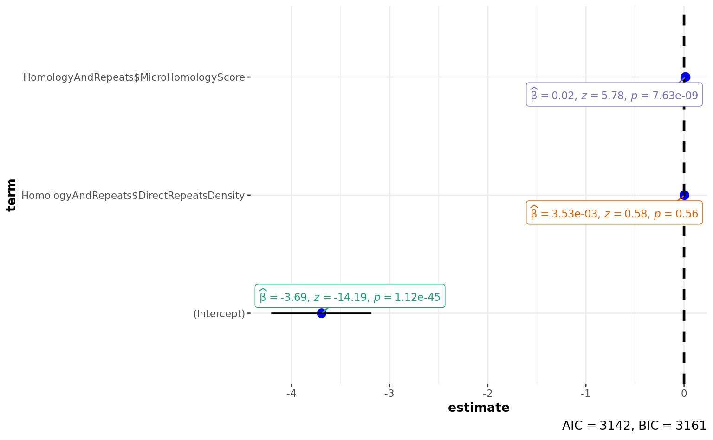
broom::tidy(a)broom::glance(a)a <-
glm(
HomologyAndRepeats$Deletion ~ scale(HomologyAndRepeats$MicroHomologyScore),
family = binomial
)
summary(a)
Call:
glm(formula = HomologyAndRepeats$Deletion ~ scale(HomologyAndRepeats$MicroHomologyScore),
family = binomial)
Deviance Residuals:
Min 1Q Median 3Q Max
-0.7445 -0.4746 -0.4368 -0.3956 2.5063
Coefficients:
Estimate Std. Error z value
(Intercept) -2.25264 0.04914 -45.838
scale(HomologyAndRepeats$MicroHomologyScore) 0.27442 0.04697 5.843
Pr(>|z|)
(Intercept) < 2e-16 ***
scale(HomologyAndRepeats$MicroHomologyScore) 5.13e-09 ***
---
Signif. codes: 0 '***' 0.001 '**' 0.01 '*' 0.05 '.' 0.1 ' ' 1
(Dispersion parameter for binomial family taken to be 1)
Null deviance: 3169.7 on 4949 degrees of freedom
Residual deviance: 3135.9 on 4948 degrees of freedom
AIC: 3139.9
Number of Fisher Scoring iterations: 5ggstatsplot::ggcoefstats(a)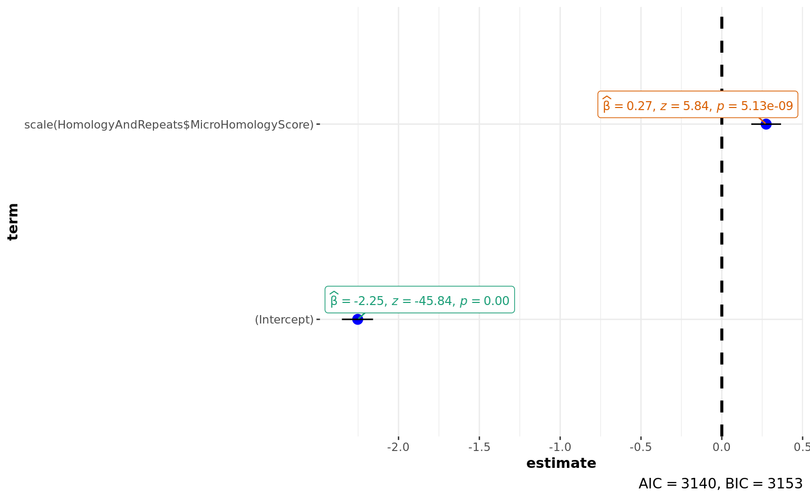
broom::tidy(a)broom::glance(a)may be add perfect repeats of Orlov - yes or no for each deletion? and see, if microhomology still important?
5: READ GLOBAL FOLDING:
GlobalFolding <-
here(
data_dir,
"HeatMaps/Link_matrix1000_major.csv") %>%
normalizePath() %>%
read.table(
sep = ";",
header = TRUE
)
row.names(GlobalFolding) <- GlobalFolding$X
GlobalFolding <- GlobalFolding[, -1]
# make long vertical table from the matrix
for (i in seq_len(nrow(GlobalFolding))) {
for (j in seq_len(ncol(GlobalFolding))) {
# i = 2; j = 1
FirstWindow <- as.character(row.names(GlobalFolding)[i])
SecondWindow <- as.character(names(GlobalFolding)[j])
Score <- as.numeric(GlobalFolding[i, j])
OneLine <- data.frame(FirstWindow, SecondWindow, Score)
if (i == 1 & j == 1) {
Final <- OneLine
}
if (i > 1 | j > 1) {
Final <- rbind(Final, OneLine)
}
}
}
## the matrix is symmetric - I need to keep only one triangle: X>Y (don't need also diagonal, which is noizy and bold)
Final$FirstWindow <- as.numeric(as.character(Final$FirstWindow))
Final$SecondWindow <- gsub("X", "", Final$SecondWindow) %>% as.numeric()
nrow(Final)[1] 289Final <- Final[Final$FirstWindow > Final$SecondWindow, ]
nrow(Final)[1] 136GlobalFolding1000 <- Final
GlobalFolding1000 <- GlobalFolding1000[order(
GlobalFolding1000$FirstWindow,
GlobalFolding1000$SecondWindow
), ]
names(GlobalFolding1000) <- c(
"FirstWindowWholeKbRes",
"SecondWindowWholeKbRes",
"GlobalFolding1000Score"
)5.1: UPDATE GLOBAL FOLDING WITH WINDOW = 100 bp: (it automaticaly rewrites the GlobalFolding matrix from the previous point 5)
GlobalFolding <-
here(
data_dir,
"HeatMaps/Link_matrix100hydra_major.csv") %>%
normalizePath() %>%
read.table(
sep = ";",
header = TRUE
)
row.names(GlobalFolding) <- GlobalFolding$X
GlobalFolding <- GlobalFolding[, -1]
# make long vertical table from the matrix
for (i in seq_len(nrow(GlobalFolding))) {
for (j in seq_len(ncol(GlobalFolding))) {
# i = 2; j = 1
FirstWindow <- as.character(row.names(GlobalFolding)[i])
SecondWindow <- as.character(names(GlobalFolding)[j])
Score <- as.numeric(GlobalFolding[i, j])
OneLine <- data.frame(FirstWindow, SecondWindow, Score)
if (i == 1 & j == 1) {
Final <- OneLine
}
if (i > 1 | j > 1) {
Final <- rbind(Final, OneLine)
}
}
}
Final$FirstWindow <- as.numeric(as.character(Final$FirstWindow))
Final$SecondWindow <- gsub("X", "", Final$SecondWindow) %>% as.numeric()
nrow(Final)[1] 27556Final <- Final[Final$FirstWindow > Final$SecondWindow, ]
nrow(Final)[1] 13695# Should we delete bold diagonal or erase it to zeroes??? If delete, dimension will be decreased - try this. delete 5 windows next to diagonal (500)
nrow(Final)[1] 13695Final <- Final[Final$FirstWindow > Final$SecondWindow + 1000, ]
nrow(Final) # 500 or 1000!!!!!! similarly good results but 1000 is a bit better[1] 12090GlobalFolding <- Final
GlobalFolding <- GlobalFolding[order(GlobalFolding$FirstWindow, GlobalFolding$SecondWindow), ]
names(GlobalFolding)[3] <- c("GlobalFoldingScore")pltHeatmap_gFolding_sw100 <-
here(data_dir, "HeatMaps/Link_matrix100hydra_major.csv") %>%
read.table(
sep = ";",
header = TRUE
) %>%
gather(-X,
key = "SecondWindow",
value = "Score"
) %>%
rename(FirstWindow = X) %>%
mutate(SecondWindow = stringr::str_extract(
SecondWindow,
"\\d+"
) %>%
as.integer()) %>%
filter(
FirstWindow >= 5950,
SecondWindow >= 5950
) %>%
tibble() %>%
ggplot(aes(
x = FirstWindow,
y = SecondWindow,
fill = Score
)) +
geom_tile() +
scale_y_reverse() +
scale_fill_viridis_c(option = "D", direction = -1) +
theme_bw(base_size = 18)
cowplot::save_plot(
plot = pltHeatmap_gFolding_sw100,
base_height = 8.316,
base_width = 11.594,
file = normalizePath(
file.path(plots_dir, "heatmap_global_folding_sw100.pdf")
)
)
pltHeatmap_gFolding_sw100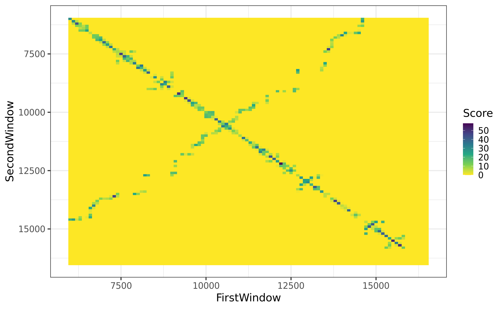
folding_df <-
here(
data_dir,
"HeatMaps/Link_matrix100hydra_major.csv") %>%
read.table(
sep = ";",
header = TRUE
) %>%
gather(-X,
key = "SecondWindow",
value = "Score"
) %>%
rename(FirstWindow = X) %>%
mutate(SecondWindow = stringr::str_extract(
SecondWindow,
"\\d+"
) %>%
as.integer()) %>%
filter(
FirstWindow >= 5950,
SecondWindow >= 5950
) %>%
tibble()GlobalFolding - is the whole genome without bold diagonal, not only the major arc!! Keep only major arc in downstream analyses. (will do it when merge with InvRepDens)
5.2: STABILITY OF DUPLEXES
stblt_df <-
read.csv(here(
data_dir,
"HeatMaps/duplex-stablility_100x100.mtrx"),
sep = ";",
row.names = 1
) %>% .[, -dim(.)[2]]
# I don't know why coordinates aren't equal so I match them first
all((dimnames(stblt_df)[[2]] |> str_remove("X")) %in% dimnames(stblt_df)[[1]]) # TRUE[1] TRUEall(dimnames(stblt_df)[[1]] %in% (dimnames(stblt_df)[[2]] |> str_remove("X"))) # FALSE[1] FALSEdimnames(stblt_df)[[2]] <-
dimnames(stblt_df)[[1]][match(
dimnames(stblt_df)[[2]] |> str_remove("X"),
dimnames(stblt_df)[[1]]
)]
# stblt_df <- stblt_df[dimnames(stblt_df)[[2]], ]
# dim(stblt_df) # 108 x 108
stblt_mtrx <- as.matrix(stblt_df)
dimnames(stblt_mtrx) <- list(
x = as.integer(dimnames(stblt_df)[[1]]),
y = as.integer(dimnames(stblt_df)[[2]])
)
stblt_plot2d <-
melt(stblt_mtrx, value.name = "duplexes_stability") |>
mutate(x = x + 19, y = y + 19)
gg_stblt <-
ggplot(
stblt_plot2d,
aes(x, y,
z = duplexes_stability,
fill = duplexes_stability
)
)
gg_duplexes_stability <- gg_stblt + geom_raster(interpolate = TRUE)
gg_duplexes_stability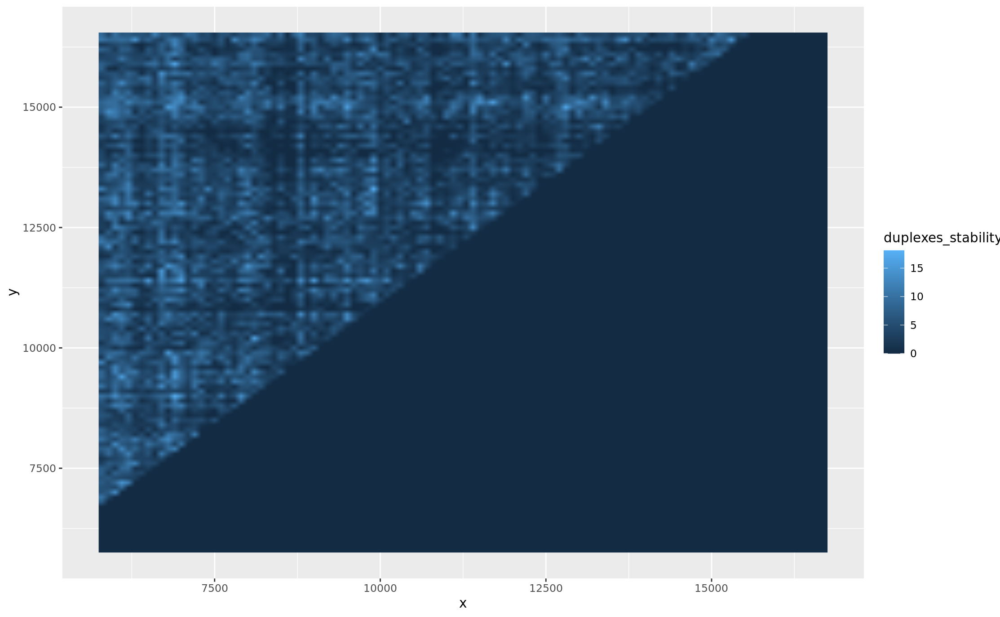
Article version Figure 2D: Heatmap merged Stability of duplexes and Global folding scores
bind_df <-
inner_join(
folding_df, stblt_plot2d,
by = c(
"FirstWindow" = "x",
"SecondWindow" = "y"
),
keep = FALSE
) %>%
asymmetrise(
.,
FirstWindow,
SecondWindow
)
gg_bind <-
ggplot(
bind_df,
aes(
x = FirstWindow,
y = SecondWindow
)
) +
geom_asymmat(aes(
fill_br = duplexes_stability,
fill_tl = Score
)) +
scale_fill_br_gradientn(
colours = viridis::viridis(2000)[250:2000],
na.value = "white",
guide = guide_colourbar(
direction = "horizontal",
order = 1,
title.position = "top",
barwidth = 10, barheight = 1
)
) +
scale_fill_tl_distiller(
type = "div",
palette = "RdYlBu",
direction = 1,
na.value = "white",
guide = guide_colourbar(
direction = "horizontal",
order = 2,
title.position = "top",
barwidth = 10, barheight = 1
)
) +
labs(
fill_tl = "bottom-left Stability of duplexes",
fill_br = "top-right Global folding",
title = "Model of mtDNA structural stability"
) +
theme_bw() +
theme(
axis.title = element_blank(),
plot.title = element_text(hjust = 0.5),
panel.background = element_rect(fill = "white"),
panel.grid = element_blank(),
legend.position = "bottom",
legend.box = "horizontal"
)
cowplot::save_plot(
plot = gg_bind,
base_height = 8.316,
base_asp = 0.9,
file = here(plots_dir, "heatmap_folding_stability.svg")
)
gg_bind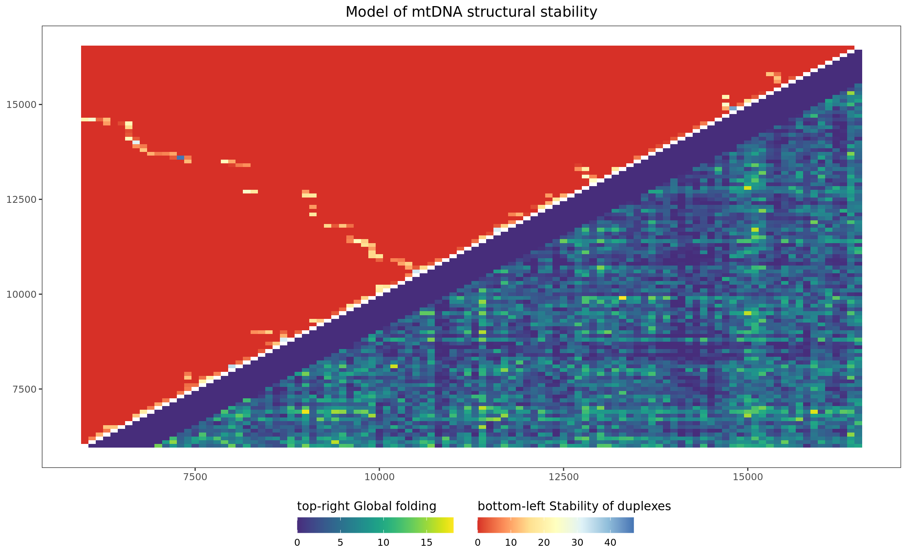
6: READ INVERTED REPEATS WITH STEP 1000
InvRepDens <-
here(
data_dir,
"HeatMaps/Link_matrix_1000_invert_major_activ_left.csv") %>%
normalizePath() %>%
read.table(
sep = ";",
header = TRUE
)
row.names(InvRepDens) <- InvRepDens$X
InvRepDens <- InvRepDens[, -1]
# make long vertical table from the matrix
for (i in seq_len(nrow(InvRepDens))) {
for (j in seq_len(ncol(InvRepDens))) {
# i = 2; j = 1
FirstWindow <- as.character(row.names(InvRepDens)[i])
SecondWindow <- as.character(names(InvRepDens)[j])
Score <- as.numeric(InvRepDens[i, j])
OneLine <- data.frame(FirstWindow, SecondWindow, Score)
if (i == 1 & j == 1) {
Final <- OneLine
}
if (i > 1 | j > 1) {
Final <- rbind(Final, OneLine)
}
}
}
Final$FirstWindow <- as.numeric(as.character(Final$FirstWindow))
Final$SecondWindow <- gsub("X", "", Final$SecondWindow) %>% as.numeric()
nrow(Final)[1] 289Final <- Final[Final$FirstWindow > Final$SecondWindow, ]
nrow(Final)[1] 136InvRepDens <- Final
InvRepDens <- InvRepDens[order(InvRepDens$FirstWindow, InvRepDens$SecondWindow), ]6.1: UPDATE INVERTED REPEATS WITH STEP 100 bp (it automatically rewrites InvRepDens from previous point 6)
InvRepDens <-
here("2_Derived/HeatMaps/Link_matrix_invert_major_activ_left.modified.csv") %>%
normalizePath() %>%
read.table(
sep = "\t",
header = TRUE,
row.names = 1
) # , row.names = NULL)
# make long vertical table from the matrix
for (i in seq_len(nrow(InvRepDens))) {
for (j in seq_len(ncol(InvRepDens))) {
# i = 2; j = 1
FirstWindow <- as.character(row.names(InvRepDens)[i])
SecondWindow <- as.character(names(InvRepDens)[j])
Score <- as.numeric(InvRepDens[i, j])
OneLine <- data.frame(FirstWindow, SecondWindow, Score)
if (i == 1 & j == 1) {
Final <- OneLine
}
if (i > 1 | j > 1) {
Final <- rbind(Final, OneLine)
}
}
}
Final$FirstWindow <- as.numeric(as.character(Final$FirstWindow))
Final$SecondWindow <- gsub("X", "", Final$SecondWindow) %>% as.numeric()
nrow(Final)[1] 10000Final <- Final[Final$FirstWindow > Final$SecondWindow, ]
nrow(Final)[1] 4950InvRepDens <- Final
InvRepDens <- InvRepDens[order(InvRepDens$FirstWindow, InvRepDens$SecondWindow), ]names(InvRepDens)[3] <- c("InvRepDensScore")
skimr::skim(InvRepDens)| Name | InvRepDens |
| Number of rows | 4950 |
| Number of columns | 3 |
| _______________________ | |
| Column type frequency: | |
| numeric | 3 |
| ________________________ | |
| Group variables | None |
Variable type: numeric
| skim_variable | n_missing | complete_rate | mean | sd | p0 | p25 | p50 | p75 | p100 | hist |
|---|---|---|---|---|---|---|---|---|---|---|
| FirstWindow | 0 | 1 | 12533.33 | 2345.21 | 6000 | 10900 | 12900 | 14500 | 15800 | ▁▃▅▆▇ |
| SecondWindow | 0 | 1 | 9166.67 | 2345.21 | 5900 | 7200 | 8800 | 10800 | 15700 | ▇▆▅▃▁ |
| InvRepDensScore | 0 | 1 | 1.42 | 3.88 | 0 | 0 | 0 | 0 | 31 | ▇▁▁▁▁ |
7: CORRELATE InvRepDens\(Score and GlobalFolding\)Score
- weak positive!
merged <- merge(InvRepDens, GlobalFolding, by = c("FirstWindow", "SecondWindow"))
summary(merged$FirstWindow) # diag 500: 6500 15800; diag 1000: 7000 - 15800 Min. 1st Qu. Median Mean 3rd Qu. Max.
7000 11400 13200 12867 14700 15800 summary(merged$SecondWindow) # diag 500: 5900 15200; diag 1000: 5900 14700 Min. 1st Qu. Median Mean 3rd Qu. Max.
5900 7000 8500 8833 10300 14700 skimr::skim(merged)| Name | merged |
| Number of rows | 4005 |
| Number of columns | 4 |
| _______________________ | |
| Column type frequency: | |
| numeric | 4 |
| ________________________ | |
| Group variables | None |
Variable type: numeric
| skim_variable | n_missing | complete_rate | mean | sd | p0 | p25 | p50 | p75 | p100 | hist |
|---|---|---|---|---|---|---|---|---|---|---|
| FirstWindow | 0 | 1 | 12866.67 | 2109.50 | 7000 | 11400 | 13200 | 14700 | 15800 | ▁▃▅▆▇ |
| SecondWindow | 0 | 1 | 8833.33 | 2109.50 | 5900 | 7000 | 8500 | 10300 | 14700 | ▇▆▅▃▁ |
| InvRepDensScore | 0 | 1 | 1.39 | 3.81 | 0 | 0 | 0 | 0 | 31 | ▇▁▁▁▁ |
| GlobalFoldingScore | 0 | 1 | 0.16 | 1.74 | 0 | 0 | 0 | 0 | 47 | ▇▁▁▁▁ |
pspearman::spearman.test(merged$InvRepDensScore, merged$GlobalFoldingScore)
Spearman's rank correlation rho
data: merged$InvRepDensScore and merged$GlobalFoldingScore
S = 1.0177e+10, p-value = 0.001745
alternative hypothesis: true rho is not equal to 0
sample estimates:
rho
0.04945796 nrow(merged) # 4005[1] 40058: ADD InfinitySign parameter into HomologyAndRepeats dataset (13 - 16 kb vs 6-9 kb):
HomologyAndRepeats$InfinitySign <- 0
for (i in seq_len(nrow(HomologyAndRepeats))) {
if (HomologyAndRepeats$FirstWindow[i] >= 13000 &
HomologyAndRepeats$FirstWindow[i] <= 16000 &
HomologyAndRepeats$SecondWindow[i] >= 6000 &
HomologyAndRepeats$SecondWindow[i] <= 9000) {
HomologyAndRepeats$InfinitySign[i] <- 1
}
}
janitor::tabyl(HomologyAndRepeats$InfinitySign)janitor::tabyl(HomologyAndRepeats, Deletion, InfinitySign)sjmisc::frq(HomologyAndRepeats)FirstWindow <numeric>
# total N=4950 valid N=4950 mean=12533.33 sd=2345.21
Value | N | Raw % | Valid % | Cum. %
-------------------------------------
6000 | 1 | 0.02 | 0.02 | 0.02
6100 | 2 | 0.04 | 0.04 | 0.06
6200 | 3 | 0.06 | 0.06 | 0.12
6300 | 4 | 0.08 | 0.08 | 0.20
6400 | 5 | 0.10 | 0.10 | 0.30
6500 | 6 | 0.12 | 0.12 | 0.42
6600 | 7 | 0.14 | 0.14 | 0.57
6700 | 8 | 0.16 | 0.16 | 0.73
6800 | 9 | 0.18 | 0.18 | 0.91
6900 | 10 | 0.20 | 0.20 | 1.11
7000 | 11 | 0.22 | 0.22 | 1.33
7100 | 12 | 0.24 | 0.24 | 1.58
7200 | 13 | 0.26 | 0.26 | 1.84
7300 | 14 | 0.28 | 0.28 | 2.12
7400 | 15 | 0.30 | 0.30 | 2.42
7500 | 16 | 0.32 | 0.32 | 2.75
7600 | 17 | 0.34 | 0.34 | 3.09
7700 | 18 | 0.36 | 0.36 | 3.45
7800 | 19 | 0.38 | 0.38 | 3.84
7900 | 20 | 0.40 | 0.40 | 4.24
8000 | 21 | 0.42 | 0.42 | 4.67
8100 | 22 | 0.44 | 0.44 | 5.11
8200 | 23 | 0.46 | 0.46 | 5.58
8300 | 24 | 0.48 | 0.48 | 6.06
8400 | 25 | 0.51 | 0.51 | 6.57
8500 | 26 | 0.53 | 0.53 | 7.09
8600 | 27 | 0.55 | 0.55 | 7.64
8700 | 28 | 0.57 | 0.57 | 8.20
8800 | 29 | 0.59 | 0.59 | 8.79
8900 | 30 | 0.61 | 0.61 | 9.39
9000 | 31 | 0.63 | 0.63 | 10.02
9100 | 32 | 0.65 | 0.65 | 10.67
9200 | 33 | 0.67 | 0.67 | 11.33
9300 | 34 | 0.69 | 0.69 | 12.02
9400 | 35 | 0.71 | 0.71 | 12.73
9500 | 36 | 0.73 | 0.73 | 13.45
9600 | 37 | 0.75 | 0.75 | 14.20
9700 | 38 | 0.77 | 0.77 | 14.97
9800 | 39 | 0.79 | 0.79 | 15.76
9900 | 40 | 0.81 | 0.81 | 16.57
10000 | 41 | 0.83 | 0.83 | 17.39
10100 | 42 | 0.85 | 0.85 | 18.24
10200 | 43 | 0.87 | 0.87 | 19.11
10300 | 44 | 0.89 | 0.89 | 20.00
10400 | 45 | 0.91 | 0.91 | 20.91
10500 | 46 | 0.93 | 0.93 | 21.84
10600 | 47 | 0.95 | 0.95 | 22.79
10700 | 48 | 0.97 | 0.97 | 23.76
10800 | 49 | 0.99 | 0.99 | 24.75
10900 | 50 | 1.01 | 1.01 | 25.76
11000 | 51 | 1.03 | 1.03 | 26.79
11100 | 52 | 1.05 | 1.05 | 27.84
11200 | 53 | 1.07 | 1.07 | 28.91
11300 | 54 | 1.09 | 1.09 | 30.00
11400 | 55 | 1.11 | 1.11 | 31.11
11500 | 56 | 1.13 | 1.13 | 32.24
11600 | 57 | 1.15 | 1.15 | 33.39
11700 | 58 | 1.17 | 1.17 | 34.57
11800 | 59 | 1.19 | 1.19 | 35.76
11900 | 60 | 1.21 | 1.21 | 36.97
12000 | 61 | 1.23 | 1.23 | 38.20
12100 | 62 | 1.25 | 1.25 | 39.45
12200 | 63 | 1.27 | 1.27 | 40.73
12300 | 64 | 1.29 | 1.29 | 42.02
12400 | 65 | 1.31 | 1.31 | 43.33
12500 | 66 | 1.33 | 1.33 | 44.67
12600 | 67 | 1.35 | 1.35 | 46.02
12700 | 68 | 1.37 | 1.37 | 47.39
12800 | 69 | 1.39 | 1.39 | 48.79
12900 | 70 | 1.41 | 1.41 | 50.20
13000 | 71 | 1.43 | 1.43 | 51.64
13100 | 72 | 1.45 | 1.45 | 53.09
13200 | 73 | 1.47 | 1.47 | 54.57
13300 | 74 | 1.49 | 1.49 | 56.06
13400 | 75 | 1.52 | 1.52 | 57.58
13500 | 76 | 1.54 | 1.54 | 59.11
13600 | 77 | 1.56 | 1.56 | 60.67
13700 | 78 | 1.58 | 1.58 | 62.24
13800 | 79 | 1.60 | 1.60 | 63.84
13900 | 80 | 1.62 | 1.62 | 65.45
14000 | 81 | 1.64 | 1.64 | 67.09
14100 | 82 | 1.66 | 1.66 | 68.75
14200 | 83 | 1.68 | 1.68 | 70.42
14300 | 84 | 1.70 | 1.70 | 72.12
14400 | 85 | 1.72 | 1.72 | 73.84
14500 | 86 | 1.74 | 1.74 | 75.58
14600 | 87 | 1.76 | 1.76 | 77.33
14700 | 88 | 1.78 | 1.78 | 79.11
14800 | 89 | 1.80 | 1.80 | 80.91
14900 | 90 | 1.82 | 1.82 | 82.73
15000 | 91 | 1.84 | 1.84 | 84.57
15100 | 92 | 1.86 | 1.86 | 86.42
15200 | 93 | 1.88 | 1.88 | 88.30
15300 | 94 | 1.90 | 1.90 | 90.20
15400 | 95 | 1.92 | 1.92 | 92.12
15500 | 96 | 1.94 | 1.94 | 94.06
15600 | 97 | 1.96 | 1.96 | 96.02
15700 | 98 | 1.98 | 1.98 | 98.00
15800 | 99 | 2.00 | 2.00 | 100.00
<NA> | 0 | 0.00 | <NA> | <NA>
SecondWindow <numeric>
# total N=4950 valid N=4950 mean=9166.67 sd=2345.21
Value | N | Raw % | Valid % | Cum. %
-------------------------------------
5900 | 99 | 2.00 | 2.00 | 2.00
6000 | 98 | 1.98 | 1.98 | 3.98
6100 | 97 | 1.96 | 1.96 | 5.94
6200 | 96 | 1.94 | 1.94 | 7.88
6300 | 95 | 1.92 | 1.92 | 9.80
6400 | 94 | 1.90 | 1.90 | 11.70
6500 | 93 | 1.88 | 1.88 | 13.58
6600 | 92 | 1.86 | 1.86 | 15.43
6700 | 91 | 1.84 | 1.84 | 17.27
6800 | 90 | 1.82 | 1.82 | 19.09
6900 | 89 | 1.80 | 1.80 | 20.89
7000 | 88 | 1.78 | 1.78 | 22.67
7100 | 87 | 1.76 | 1.76 | 24.42
7200 | 86 | 1.74 | 1.74 | 26.16
7300 | 85 | 1.72 | 1.72 | 27.88
7400 | 84 | 1.70 | 1.70 | 29.58
7500 | 83 | 1.68 | 1.68 | 31.25
7600 | 82 | 1.66 | 1.66 | 32.91
7700 | 81 | 1.64 | 1.64 | 34.55
7800 | 80 | 1.62 | 1.62 | 36.16
7900 | 79 | 1.60 | 1.60 | 37.76
8000 | 78 | 1.58 | 1.58 | 39.33
8100 | 77 | 1.56 | 1.56 | 40.89
8200 | 76 | 1.54 | 1.54 | 42.42
8300 | 75 | 1.52 | 1.52 | 43.94
8400 | 74 | 1.49 | 1.49 | 45.43
8500 | 73 | 1.47 | 1.47 | 46.91
8600 | 72 | 1.45 | 1.45 | 48.36
8700 | 71 | 1.43 | 1.43 | 49.80
8800 | 70 | 1.41 | 1.41 | 51.21
8900 | 69 | 1.39 | 1.39 | 52.61
9000 | 68 | 1.37 | 1.37 | 53.98
9100 | 67 | 1.35 | 1.35 | 55.33
9200 | 66 | 1.33 | 1.33 | 56.67
9300 | 65 | 1.31 | 1.31 | 57.98
9400 | 64 | 1.29 | 1.29 | 59.27
9500 | 63 | 1.27 | 1.27 | 60.55
9600 | 62 | 1.25 | 1.25 | 61.80
9700 | 61 | 1.23 | 1.23 | 63.03
9800 | 60 | 1.21 | 1.21 | 64.24
9900 | 59 | 1.19 | 1.19 | 65.43
10000 | 58 | 1.17 | 1.17 | 66.61
10100 | 57 | 1.15 | 1.15 | 67.76
10200 | 56 | 1.13 | 1.13 | 68.89
10300 | 55 | 1.11 | 1.11 | 70.00
10400 | 54 | 1.09 | 1.09 | 71.09
10500 | 53 | 1.07 | 1.07 | 72.16
10600 | 52 | 1.05 | 1.05 | 73.21
10700 | 51 | 1.03 | 1.03 | 74.24
10800 | 50 | 1.01 | 1.01 | 75.25
10900 | 49 | 0.99 | 0.99 | 76.24
11000 | 48 | 0.97 | 0.97 | 77.21
11100 | 47 | 0.95 | 0.95 | 78.16
11200 | 46 | 0.93 | 0.93 | 79.09
11300 | 45 | 0.91 | 0.91 | 80.00
11400 | 44 | 0.89 | 0.89 | 80.89
11500 | 43 | 0.87 | 0.87 | 81.76
11600 | 42 | 0.85 | 0.85 | 82.61
11700 | 41 | 0.83 | 0.83 | 83.43
11800 | 40 | 0.81 | 0.81 | 84.24
11900 | 39 | 0.79 | 0.79 | 85.03
12000 | 38 | 0.77 | 0.77 | 85.80
12100 | 37 | 0.75 | 0.75 | 86.55
12200 | 36 | 0.73 | 0.73 | 87.27
12300 | 35 | 0.71 | 0.71 | 87.98
12400 | 34 | 0.69 | 0.69 | 88.67
12500 | 33 | 0.67 | 0.67 | 89.33
12600 | 32 | 0.65 | 0.65 | 89.98
12700 | 31 | 0.63 | 0.63 | 90.61
12800 | 30 | 0.61 | 0.61 | 91.21
12900 | 29 | 0.59 | 0.59 | 91.80
13000 | 28 | 0.57 | 0.57 | 92.36
13100 | 27 | 0.55 | 0.55 | 92.91
13200 | 26 | 0.53 | 0.53 | 93.43
13300 | 25 | 0.51 | 0.51 | 93.94
13400 | 24 | 0.48 | 0.48 | 94.42
13500 | 23 | 0.46 | 0.46 | 94.89
13600 | 22 | 0.44 | 0.44 | 95.33
13700 | 21 | 0.42 | 0.42 | 95.76
13800 | 20 | 0.40 | 0.40 | 96.16
13900 | 19 | 0.38 | 0.38 | 96.55
14000 | 18 | 0.36 | 0.36 | 96.91
14100 | 17 | 0.34 | 0.34 | 97.25
14200 | 16 | 0.32 | 0.32 | 97.58
14300 | 15 | 0.30 | 0.30 | 97.88
14400 | 14 | 0.28 | 0.28 | 98.16
14500 | 13 | 0.26 | 0.26 | 98.42
14600 | 12 | 0.24 | 0.24 | 98.67
14700 | 11 | 0.22 | 0.22 | 98.89
14800 | 10 | 0.20 | 0.20 | 99.09
14900 | 9 | 0.18 | 0.18 | 99.27
15000 | 8 | 0.16 | 0.16 | 99.43
15100 | 7 | 0.14 | 0.14 | 99.58
15200 | 6 | 0.12 | 0.12 | 99.70
15300 | 5 | 0.10 | 0.10 | 99.80
15400 | 4 | 0.08 | 0.08 | 99.88
15500 | 3 | 0.06 | 0.06 | 99.94
15600 | 2 | 0.04 | 0.04 | 99.98
15700 | 1 | 0.02 | 0.02 | 100.00
<NA> | 0 | 0.00 | <NA> | <NA>
DirectRepeatsDensity <numeric>
# total N=4950 valid N=4950 mean=5.72 sd=7.74
Value | N | Raw % | Valid % | Cum. %
---------------------------------------
0 | 2863 | 57.84 | 57.84 | 57.84
5 | 7 | 0.14 | 0.14 | 57.98
6 | 30 | 0.61 | 0.61 | 58.59
7 | 33 | 0.67 | 0.67 | 59.25
8 | 33 | 0.67 | 0.67 | 59.92
9 | 27 | 0.55 | 0.55 | 60.46
10 | 838 | 16.93 | 16.93 | 77.39
11 | 263 | 5.31 | 5.31 | 82.71
12 | 157 | 3.17 | 3.17 | 85.88
13 | 101 | 2.04 | 2.04 | 87.92
14 | 36 | 0.73 | 0.73 | 88.65
15 | 32 | 0.65 | 0.65 | 89.29
16 | 26 | 0.53 | 0.53 | 89.82
17 | 29 | 0.59 | 0.59 | 90.40
18 | 29 | 0.59 | 0.59 | 90.99
19 | 20 | 0.40 | 0.40 | 91.39
20 | 119 | 2.40 | 2.40 | 93.80
21 | 84 | 1.70 | 1.70 | 95.49
22 | 46 | 0.93 | 0.93 | 96.42
23 | 43 | 0.87 | 0.87 | 97.29
24 | 31 | 0.63 | 0.63 | 97.92
25 | 10 | 0.20 | 0.20 | 98.12
26 | 13 | 0.26 | 0.26 | 98.38
27 | 5 | 0.10 | 0.10 | 98.48
28 | 7 | 0.14 | 0.14 | 98.63
29 | 8 | 0.16 | 0.16 | 98.79
30 | 10 | 0.20 | 0.20 | 98.99
31 | 7 | 0.14 | 0.14 | 99.13
32 | 10 | 0.20 | 0.20 | 99.33
33 | 8 | 0.16 | 0.16 | 99.49
34 | 10 | 0.20 | 0.20 | 99.70
35 | 5 | 0.10 | 0.10 | 99.80
36 | 1 | 0.02 | 0.02 | 99.82
37 | 1 | 0.02 | 0.02 | 99.84
38 | 1 | 0.02 | 0.02 | 99.86
39 | 1 | 0.02 | 0.02 | 99.88
41 | 1 | 0.02 | 0.02 | 99.90
43 | 1 | 0.02 | 0.02 | 99.92
44 | 2 | 0.04 | 0.04 | 99.96
53 | 1 | 0.02 | 0.02 | 99.98
57 | 1 | 0.02 | 0.02 | 100.00
<NA> | 0 | 0.00 | <NA> | <NA>
MicroHomologyScore <numeric>
# total N=4950 valid N=4950 mean=90.09 sd=17.27
Value | N | Raw % | Valid % | Cum. %
--------------------------------------
27 | 1 | 0.02 | 0.02 | 0.02
32 | 1 | 0.02 | 0.02 | 0.04
33 | 2 | 0.04 | 0.04 | 0.08
35 | 2 | 0.04 | 0.04 | 0.12
37 | 1 | 0.02 | 0.02 | 0.14
40 | 2 | 0.04 | 0.04 | 0.18
41 | 1 | 0.02 | 0.02 | 0.20
42 | 3 | 0.06 | 0.06 | 0.26
43 | 5 | 0.10 | 0.10 | 0.36
44 | 3 | 0.06 | 0.06 | 0.42
45 | 6 | 0.12 | 0.12 | 0.55
46 | 2 | 0.04 | 0.04 | 0.59
47 | 3 | 0.06 | 0.06 | 0.65
48 | 3 | 0.06 | 0.06 | 0.71
49 | 9 | 0.18 | 0.18 | 0.89
50 | 4 | 0.08 | 0.08 | 0.97
51 | 6 | 0.12 | 0.12 | 1.09
52 | 3 | 0.06 | 0.06 | 1.15
53 | 9 | 0.18 | 0.18 | 1.33
54 | 4 | 0.08 | 0.08 | 1.41
55 | 18 | 0.36 | 0.36 | 1.78
56 | 5 | 0.10 | 0.10 | 1.88
57 | 11 | 0.22 | 0.22 | 2.10
58 | 23 | 0.46 | 0.46 | 2.57
59 | 21 | 0.42 | 0.42 | 2.99
60 | 22 | 0.44 | 0.44 | 3.43
61 | 28 | 0.57 | 0.57 | 4.00
62 | 31 | 0.63 | 0.63 | 4.63
63 | 32 | 0.65 | 0.65 | 5.27
64 | 44 | 0.89 | 0.89 | 6.16
65 | 28 | 0.57 | 0.57 | 6.73
66 | 34 | 0.69 | 0.69 | 7.41
67 | 36 | 0.73 | 0.73 | 8.14
68 | 55 | 1.11 | 1.11 | 9.25
69 | 50 | 1.01 | 1.01 | 10.26
70 | 65 | 1.31 | 1.31 | 11.58
71 | 61 | 1.23 | 1.23 | 12.81
72 | 71 | 1.43 | 1.43 | 14.24
73 | 65 | 1.31 | 1.31 | 15.56
74 | 73 | 1.47 | 1.47 | 17.03
75 | 74 | 1.49 | 1.49 | 18.53
76 | 90 | 1.82 | 1.82 | 20.34
77 | 107 | 2.16 | 2.16 | 22.51
78 | 111 | 2.24 | 2.24 | 24.75
79 | 93 | 1.88 | 1.88 | 26.63
80 | 105 | 2.12 | 2.12 | 28.75
81 | 121 | 2.44 | 2.44 | 31.19
82 | 125 | 2.53 | 2.53 | 33.72
83 | 126 | 2.55 | 2.55 | 36.26
84 | 121 | 2.44 | 2.44 | 38.71
85 | 132 | 2.67 | 2.67 | 41.37
86 | 114 | 2.30 | 2.30 | 43.68
87 | 114 | 2.30 | 2.30 | 45.98
88 | 144 | 2.91 | 2.91 | 48.89
89 | 128 | 2.59 | 2.59 | 51.47
90 | 110 | 2.22 | 2.22 | 53.70
91 | 121 | 2.44 | 2.44 | 56.14
92 | 97 | 1.96 | 1.96 | 58.10
93 | 90 | 1.82 | 1.82 | 59.92
94 | 105 | 2.12 | 2.12 | 62.04
95 | 124 | 2.51 | 2.51 | 64.55
96 | 119 | 2.40 | 2.40 | 66.95
97 | 101 | 2.04 | 2.04 | 68.99
98 | 117 | 2.36 | 2.36 | 71.35
99 | 75 | 1.52 | 1.52 | 72.87
100 | 78 | 1.58 | 1.58 | 74.44
101 | 78 | 1.58 | 1.58 | 76.02
102 | 85 | 1.72 | 1.72 | 77.74
103 | 68 | 1.37 | 1.37 | 79.11
104 | 78 | 1.58 | 1.58 | 80.69
105 | 68 | 1.37 | 1.37 | 82.06
106 | 60 | 1.21 | 1.21 | 83.27
107 | 59 | 1.19 | 1.19 | 84.46
108 | 59 | 1.19 | 1.19 | 85.66
109 | 60 | 1.21 | 1.21 | 86.87
110 | 67 | 1.35 | 1.35 | 88.22
111 | 48 | 0.97 | 0.97 | 89.19
112 | 37 | 0.75 | 0.75 | 89.94
113 | 41 | 0.83 | 0.83 | 90.77
114 | 45 | 0.91 | 0.91 | 91.68
115 | 32 | 0.65 | 0.65 | 92.32
116 | 37 | 0.75 | 0.75 | 93.07
117 | 32 | 0.65 | 0.65 | 93.72
118 | 30 | 0.61 | 0.61 | 94.32
119 | 21 | 0.42 | 0.42 | 94.75
120 | 34 | 0.69 | 0.69 | 95.43
121 | 14 | 0.28 | 0.28 | 95.72
122 | 22 | 0.44 | 0.44 | 96.16
123 | 13 | 0.26 | 0.26 | 96.42
124 | 13 | 0.26 | 0.26 | 96.69
125 | 21 | 0.42 | 0.42 | 97.11
126 | 12 | 0.24 | 0.24 | 97.35
127 | 12 | 0.24 | 0.24 | 97.60
128 | 14 | 0.28 | 0.28 | 97.88
129 | 11 | 0.22 | 0.22 | 98.10
130 | 12 | 0.24 | 0.24 | 98.34
131 | 13 | 0.26 | 0.26 | 98.61
132 | 11 | 0.22 | 0.22 | 98.83
133 | 9 | 0.18 | 0.18 | 99.01
134 | 4 | 0.08 | 0.08 | 99.09
135 | 3 | 0.06 | 0.06 | 99.15
136 | 4 | 0.08 | 0.08 | 99.23
137 | 5 | 0.10 | 0.10 | 99.33
138 | 2 | 0.04 | 0.04 | 99.37
139 | 4 | 0.08 | 0.08 | 99.45
140 | 2 | 0.04 | 0.04 | 99.49
141 | 2 | 0.04 | 0.04 | 99.54
142 | 3 | 0.06 | 0.06 | 99.60
143 | 3 | 0.06 | 0.06 | 99.66
145 | 3 | 0.06 | 0.06 | 99.72
146 | 4 | 0.08 | 0.08 | 99.80
147 | 3 | 0.06 | 0.06 | 99.86
149 | 1 | 0.02 | 0.02 | 99.88
150 | 1 | 0.02 | 0.02 | 99.90
151 | 1 | 0.02 | 0.02 | 99.92
153 | 1 | 0.02 | 0.02 | 99.94
158 | 2 | 0.04 | 0.04 | 99.98
160 | 1 | 0.02 | 0.02 | 100.00
<NA> | 0 | 0.00 | <NA> | <NA>
Deletion <numeric>
# total N=4950 valid N=4950 mean=0.10 sd=0.30
Value | N | Raw % | Valid % | Cum. %
---------------------------------------
0 | 4466 | 90.22 | 90.22 | 90.22
1 | 484 | 9.78 | 9.78 | 100.00
<NA> | 0 | 0.00 | <NA> | <NA>
InfinitySign <numeric>
# total N=4950 valid N=4950 mean=0.18 sd=0.39
Value | N | Raw % | Valid % | Cum. %
---------------------------------------
0 | 4051 | 81.84 | 81.84 | 81.84
1 | 899 | 18.16 | 18.16 | 100.00
<NA> | 0 | 0.00 | <NA> | <NA>HomologyAndRepeats %>% skim()| Name | Piped data |
| Number of rows | 4950 |
| Number of columns | 6 |
| _______________________ | |
| Column type frequency: | |
| numeric | 6 |
| ________________________ | |
| Group variables | None |
Variable type: numeric
| skim_variable | n_missing | complete_rate | mean | sd | p0 | p25 | p50 | p75 | p100 | hist |
|---|---|---|---|---|---|---|---|---|---|---|
| FirstWindow | 0 | 1 | 12533.33 | 2345.21 | 6000 | 10900 | 12900 | 14500 | 15800 | ▁▃▅▆▇ |
| SecondWindow | 0 | 1 | 9166.67 | 2345.21 | 5900 | 7200 | 8800 | 10800 | 15700 | ▇▆▅▃▁ |
| DirectRepeatsDensity | 0 | 1 | 5.72 | 7.74 | 0 | 0 | 0 | 10 | 57 | ▇▁▁▁▁ |
| MicroHomologyScore | 0 | 1 | 90.09 | 17.27 | 27 | 79 | 89 | 101 | 160 | ▁▅▇▂▁ |
| Deletion | 0 | 1 | 0.10 | 0.30 | 0 | 0 | 0 | 0 | 1 | ▇▁▁▁▁ |
| InfinitySign | 0 | 1 | 0.18 | 0.39 | 0 | 0 | 0 | 0 | 1 | ▇▁▁▁▂ |
HomologyAndRepeats %>%
group_by(Deletion) %>%
skim()| Name | Piped data |
| Number of rows | 4950 |
| Number of columns | 6 |
| _______________________ | |
| Column type frequency: | |
| numeric | 5 |
| ________________________ | |
| Group variables | Deletion |
Variable type: numeric
| skim_variable | Deletion | n_missing | complete_rate | mean | sd | p0 | p25 | p50 | p75 | p100 | hist |
|---|---|---|---|---|---|---|---|---|---|---|---|
| FirstWindow | 0 | 0 | 1 | 12365.74 | 2368.70 | 6000 | 10625 | 12700 | 14400 | 15800 | ▁▃▅▆▇ |
| FirstWindow | 1 | 0 | 1 | 14079.75 | 1353.30 | 8100 | 13475 | 14200 | 15200 | 15800 | ▁▁▂▇▇ |
| SecondWindow | 0 | 0 | 1 | 9273.53 | 2395.39 | 5900 | 7200 | 8900 | 11000 | 15700 | ▇▆▅▃▁ |
| SecondWindow | 1 | 0 | 1 | 8180.58 | 1494.07 | 5900 | 7175 | 8000 | 9000 | 15400 | ▇▇▂▁▁ |
| DirectRepeatsDensity | 0 | 0 | 1 | 5.68 | 7.73 | 0 | 0 | 0 | 10 | 57 | ▇▁▁▁▁ |
| DirectRepeatsDensity | 1 | 0 | 1 | 6.07 | 7.81 | 0 | 0 | 0 | 10 | 35 | ▇▃▁▁▁ |
| MicroHomologyScore | 0 | 0 | 1 | 89.62 | 17.14 | 27 | 78 | 89 | 100 | 160 | ▁▅▇▂▁ |
| MicroHomologyScore | 1 | 0 | 1 | 94.46 | 17.83 | 37 | 82 | 94 | 106 | 153 | ▁▅▇▃▁ |
| InfinitySign | 0 | 0 | 1 | 0.13 | 0.34 | 0 | 0 | 0 | 0 | 1 | ▇▁▁▁▁ |
| InfinitySign | 1 | 0 | 1 | 0.63 | 0.48 | 0 | 0 | 1 | 1 | 1 | ▅▁▁▁▇ |
HomologyAndRepeats %>%
group_by(InfinitySign) %>%
skim()| Name | Piped data |
| Number of rows | 4950 |
| Number of columns | 6 |
| _______________________ | |
| Column type frequency: | |
| numeric | 5 |
| ________________________ | |
| Group variables | InfinitySign |
Variable type: numeric
| skim_variable | InfinitySign | n_missing | complete_rate | mean | sd | p0 | p25 | p50 | p75 | p100 | hist |
|---|---|---|---|---|---|---|---|---|---|---|---|
| FirstWindow | 0 | 0 | 1 | 12119.08 | 2370.73 | 6000 | 10400 | 12300 | 14200 | 15800 | ▂▅▆▇▇ |
| FirstWindow | 1 | 0 | 1 | 14400.00 | 837.13 | 13000 | 13700 | 14400 | 15100 | 15800 | ▇▇▇▇▇ |
| SecondWindow | 0 | 0 | 1 | 9536.53 | 2406.21 | 5900 | 7400 | 9400 | 11300 | 15700 | ▇▇▆▃▂ |
| SecondWindow | 1 | 0 | 1 | 7500.00 | 894.93 | 6000 | 6700 | 7500 | 8300 | 9000 | ▇▇▇▇▇ |
| DirectRepeatsDensity | 0 | 0 | 1 | 5.63 | 7.64 | 0 | 0 | 0 | 10 | 44 | ▇▅▁▁▁ |
| DirectRepeatsDensity | 1 | 0 | 1 | 6.13 | 8.15 | 0 | 0 | 0 | 10 | 57 | ▇▁▁▁▁ |
| MicroHomologyScore | 0 | 0 | 1 | 90.06 | 17.26 | 27 | 79 | 89 | 101 | 160 | ▁▃▇▂▁ |
| MicroHomologyScore | 1 | 0 | 1 | 90.26 | 17.29 | 37 | 78 | 89 | 101 | 153 | ▁▆▇▂▁ |
| Deletion | 0 | 0 | 1 | 0.04 | 0.21 | 0 | 0 | 0 | 0 | 1 | ▇▁▁▁▁ |
| Deletion | 1 | 0 | 1 | 0.34 | 0.47 | 0 | 0 | 0 | 1 | 1 | ▇▁▁▁▅ |
## merge HomologyAndRepeats with merged(InvRepDens + GlobalFolding)
dim(HomologyAndRepeats) # 4950[1] 4950 6HomologyAndRepeats <- merge(HomologyAndRepeats,
merged,
by = c("FirstWindow", "SecondWindow")
)
dim(HomologyAndRepeats) # diag 500: 4465; diag 1000: 4005[1] 4005 8is GlobalFoldingScore higher within the cross according to our InfinitySign model? YES!!!
wilcox.test(
HomologyAndRepeats[HomologyAndRepeats$InfinitySign == 1, ]$GlobalFoldingScore,
HomologyAndRepeats[HomologyAndRepeats$InfinitySign == 0, ]$GlobalFoldingScore
) # diag 1000: 3.358e-09
Wilcoxon rank sum test with continuity correction
data: HomologyAndRepeats[HomologyAndRepeats$InfinitySign == 1, ]$GlobalFoldingScore and HomologyAndRepeats[HomologyAndRepeats$InfinitySign == 0, ]$GlobalFoldingScore
W = 1431209, p-value = 3.358e-09
alternative hypothesis: true location shift is not equal to 0boxplot(
HomologyAndRepeats[HomologyAndRepeats$InfinitySign == 1, ]$GlobalFoldingScore,
HomologyAndRepeats[HomologyAndRepeats$InfinitySign == 0, ]$GlobalFoldingScore,
notch = TRUE,
names = c("stem", "loop"),
ylab = "in silico folding score",
outline = FALSE
)
pltViolRepFoldingInfSign <-
ggbetweenstats(
data = HomologyAndRepeats,
x = InfinitySign,
y = GlobalFoldingScore,
type = "np",
# Wilcoxon for two group
mean.ci = TRUE,
nboot = 10000,
# number of iteration for statistical CI
k = 5,
# number of decimal places for statistical results
outlier.tagging = TRUE, # whether outliers need to be tagged
outlier.label = Deletion,
xlab = '"3D" Position',
# label for the x-axis variable
ylab = "in silico folding score",
# label for the y-axis variable
title = "The effect of repeats' position on folding score",
# title text for the plot
ggtheme = ggthemes::theme_fivethirtyeight(),
# choosing a different theme
package = "wesanderson",
# package from which color palette is to be taken
palette = "Royal1",
# choosing a different color palette
notch = TRUE,
messages = TRUE
)
# Note: 95% CI for effect size estimate was computed with 10000 bootstrap samples
# Note: Shapiro-Wilk Normality Test for in silico folding score: p-value = < 0.001
# Note: Bartlett's test for homogeneity of variances for factor "3D" Position: p-value = < 0.001
cowplot::save_plot(
plot = pltViolRepFoldingInfSign,
base_height = 12,
base_asp = 1.618,
file = normalizePath(
file.path(plots_dir, "violin_rep_folding_infsign_np.pdf")
)
)
pltViolRepFoldingInfSign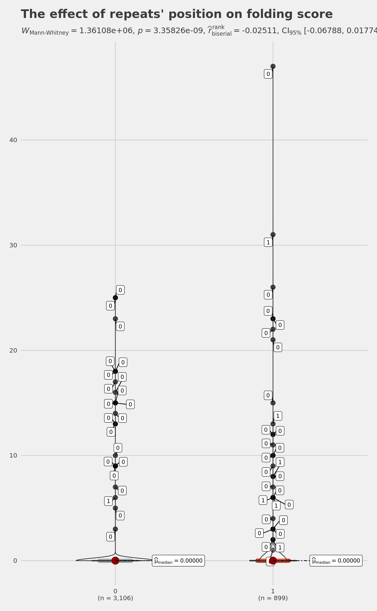
t.test(
HomologyAndRepeats[HomologyAndRepeats$InfinitySign == 1, ]$GlobalFoldingScore,
HomologyAndRepeats[HomologyAndRepeats$InfinitySign == 0, ]$GlobalFoldingScore
) # diag 1000: 0.002639
Welch Two Sample t-test
data: HomologyAndRepeats[HomologyAndRepeats$InfinitySign == 1, ]$GlobalFoldingScore and HomologyAndRepeats[HomologyAndRepeats$InfinitySign == 0, ]$GlobalFoldingScore
t = 3.0144, df = 1003.9, p-value = 0.002639
alternative hypothesis: true difference in means is not equal to 0
95 percent confidence interval:
0.1018345 0.4817022
sample estimates:
mean of x mean of y
0.38932147 0.09755312 pltViolRepFoldingInfSignP <-
ggbetweenstats(
data = HomologyAndRepeats,
x = InfinitySign,
y = GlobalFoldingScore,
type = "p",
# Wilcoxon for two group
mean.ci = TRUE,
nboot = 10000,
# number of iteration for statistical CI
k = 5,
# number of decimal places for statistical results
outlier.tagging = TRUE, # whether outliers need to be tagged
outlier.label = FirstWindow,
xlab = '"3D" Position',
# label for the x-axis variable
ylab = "in silico folding score",
# label for the y-axis variable
title = "The effect of repeats' position on folding score",
# title text for the plot
ggtheme = ggthemes::theme_fivethirtyeight(),
# choosing a different theme
package = "wesanderson",
# package from which color palette is to be taken
palette = "Royal1",
# choosing a different color palette
notch = TRUE,
messages = TRUE
)
# Note: 95% CI for effect size estimate was computed with 10000 bootstrap samples
# Note: Shapiro-Wilk Normality Test for in silico folding score: p-value = < 0.001
# Note: Bartlett's test for homogeneity of variances for factor "3D" Position: p-value = < 0.001
cowplot::save_plot(
plot = pltViolRepFoldingInfSignP,
base_height = 8,
base_asp = 1.618,
file = normalizePath(
file.path(plots_dir, "violin_rep_folding_infsign_p.pdf")
)
)
pltViolRepFoldingInfSignP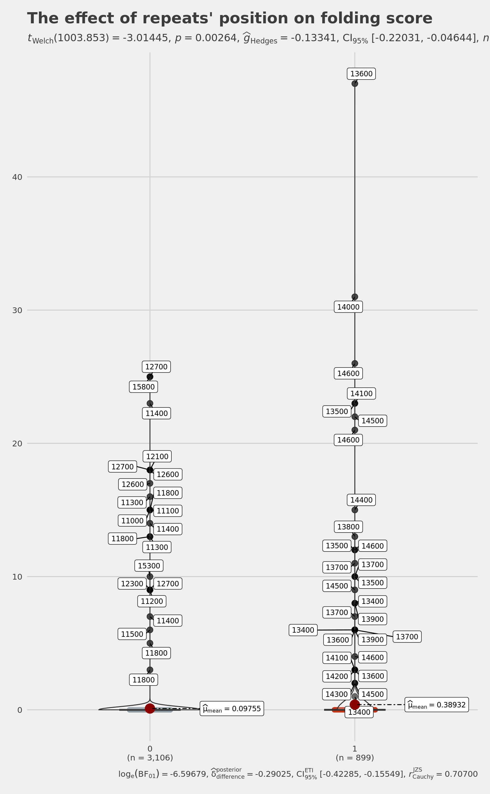
summary(HomologyAndRepeats[HomologyAndRepeats$InfinitySign == 1, ]$GlobalFoldingScore) # diag 1000: 0.3893 Min. 1st Qu. Median Mean 3rd Qu. Max.
0.0000 0.0000 0.0000 0.3893 0.0000 47.0000 summary(HomologyAndRepeats[HomologyAndRepeats$InfinitySign == 0, ]$GlobalFoldingScore) # diag 1000: 0.09755 Min. 1st Qu. Median Mean 3rd Qu. Max.
0.00000 0.00000 0.00000 0.09755 0.00000 25.00000 we have to link better global folding and InfinitySign model - till now it was done by eye. Clusterisation? One cluster?
9: LOGISTIC REGRESSION: HomologyAndRepeats\(Deletion as a function of HomologyAndRepeats\)MicroHomologyScore and HomologyAndRepeats$InfinitySign:
a <-
glm(
HomologyAndRepeats$Deletion ~ HomologyAndRepeats$MicroHomologyScore + HomologyAndRepeats$InfinitySign,
family = "binomial"
)
summary(a)
Call:
glm(formula = HomologyAndRepeats$Deletion ~ HomologyAndRepeats$MicroHomologyScore +
HomologyAndRepeats$InfinitySign, family = "binomial")
Deviance Residuals:
Min 1Q Median 3Q Max
-1.3434 -0.3920 -0.3293 -0.2893 2.6338
Coefficients:
Estimate Std. Error z value Pr(>|z|)
(Intercept) -4.573709 0.297535 -15.372 < 2e-16 ***
HomologyAndRepeats$MicroHomologyScore 0.018946 0.003026 6.262 3.8e-10 ***
HomologyAndRepeats$InfinitySign 2.170671 0.106329 20.415 < 2e-16 ***
---
Signif. codes: 0 '***' 0.001 '**' 0.01 '*' 0.05 '.' 0.1 ' ' 1
(Dispersion parameter for binomial family taken to be 1)
Null deviance: 2924.7 on 4004 degrees of freedom
Residual deviance: 2450.6 on 4002 degrees of freedom
AIC: 2456.6
Number of Fisher Scoring iterations: 5ggstatsplot::ggcoefstats(a)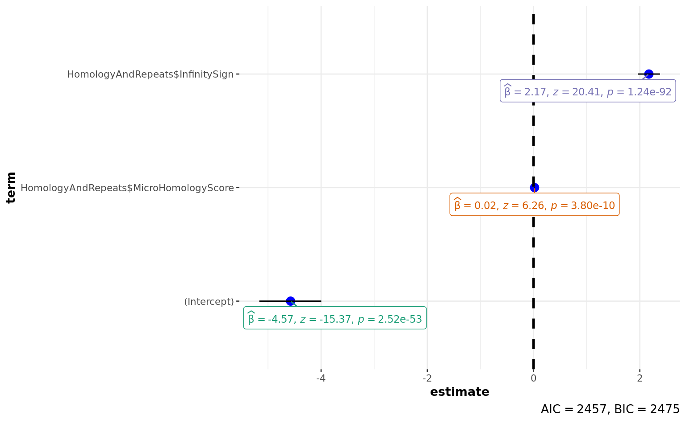
broom::tidy(a)broom::glance(a)a <-
glm(
HomologyAndRepeats$Deletion ~ scale(HomologyAndRepeats$MicroHomologyScore) + scale(HomologyAndRepeats$InfinitySign),
family = "binomial"
)
summary(a) # PAPER!!! 0.33 + 0.91
Call:
glm(formula = HomologyAndRepeats$Deletion ~ scale(HomologyAndRepeats$MicroHomologyScore) +
scale(HomologyAndRepeats$InfinitySign), family = "binomial")
Deviance Residuals:
Min 1Q Median 3Q Max
-1.3434 -0.3920 -0.3293 -0.2893 2.6338
Coefficients:
Estimate Std. Error z value
(Intercept) -2.38296 0.06412 -37.167
scale(HomologyAndRepeats$MicroHomologyScore) 0.32592 0.05205 6.262
scale(HomologyAndRepeats$InfinitySign) 0.90579 0.04437 20.415
Pr(>|z|)
(Intercept) < 2e-16 ***
scale(HomologyAndRepeats$MicroHomologyScore) 3.8e-10 ***
scale(HomologyAndRepeats$InfinitySign) < 2e-16 ***
---
Signif. codes: 0 '***' 0.001 '**' 0.01 '*' 0.05 '.' 0.1 ' ' 1
(Dispersion parameter for binomial family taken to be 1)
Null deviance: 2924.7 on 4004 degrees of freedom
Residual deviance: 2450.6 on 4002 degrees of freedom
AIC: 2456.6
Number of Fisher Scoring iterations: 5ggstatsplot::ggcoefstats(a)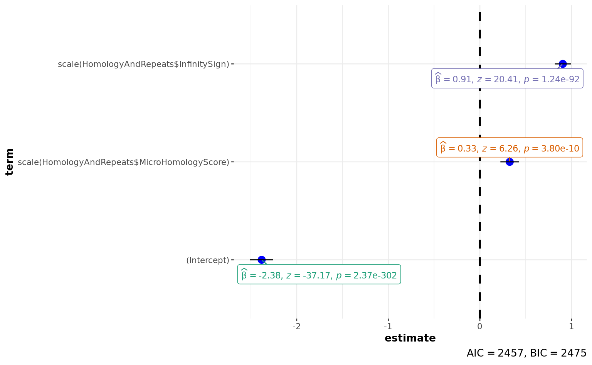
broom::tidy(a)broom::glance(a)a <-
glm(
HomologyAndRepeats$Deletion ~ HomologyAndRepeats$MicroHomologyScore + HomologyAndRepeats$GlobalFoldingScore,
family = "binomial"
)
summary(a) # non significant - may be I have to take it on bigger scale! (1kb without diagonal, because this is global parameter not precise)
Call:
glm(formula = HomologyAndRepeats$Deletion ~ HomologyAndRepeats$MicroHomologyScore +
HomologyAndRepeats$GlobalFoldingScore, family = "binomial")
Deviance Residuals:
Min 1Q Median 3Q Max
-0.8482 -0.5288 -0.4803 -0.4322 2.4455
Coefficients:
Estimate Std. Error z value Pr(>|z|)
(Intercept) -3.570891 0.266681 -13.390 < 2e-16 ***
HomologyAndRepeats$MicroHomologyScore 0.017085 0.002793 6.117 9.54e-10 ***
HomologyAndRepeats$GlobalFoldingScore 0.005585 0.028785 0.194 0.846
---
Signif. codes: 0 '***' 0.001 '**' 0.01 '*' 0.05 '.' 0.1 ' ' 1
(Dispersion parameter for binomial family taken to be 1)
Null deviance: 2924.7 on 4004 degrees of freedom
Residual deviance: 2887.5 on 4002 degrees of freedom
AIC: 2893.5
Number of Fisher Scoring iterations: 4# to reconstruct 100 bp matrix back from 1 kb matrix!!!!!
ggstatsplot::ggcoefstats(a)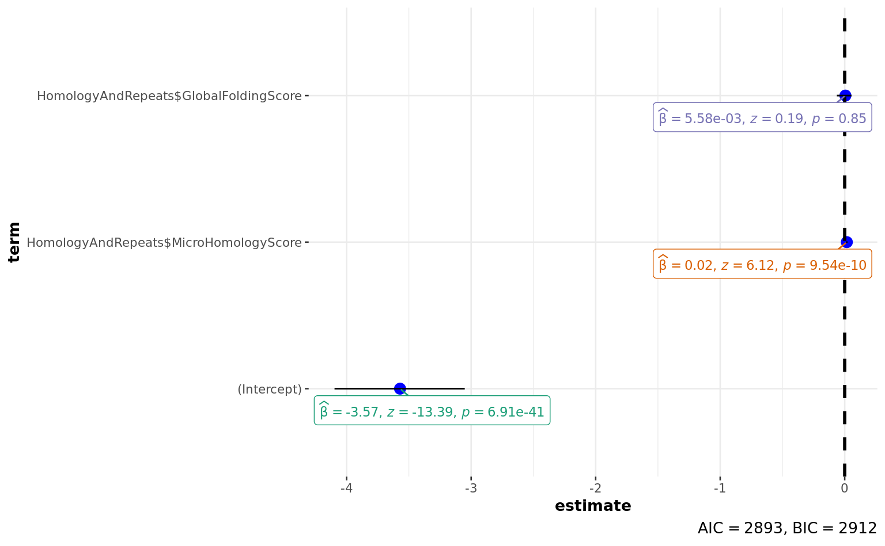
broom::tidy(a)broom::glance(a)get residuals and correlate them with global matrix
a <-
glm(HomologyAndRepeats$Deletion ~ HomologyAndRepeats$MicroHomologyScore,
family = "binomial"
)
ggstatsplot::ggcoefstats(a)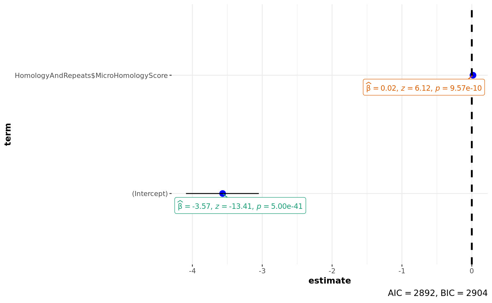
HomologyAndRepeats$Residuals <- residuals(a)
summary(HomologyAndRepeats$Residuals) Min. 1st Qu. Median Mean 3rd Qu. Max.
-0.8477 -0.5290 -0.4805 -0.1950 -0.4290 2.4445 pspearman::spearman.test(
HomologyAndRepeats$Residuals,
HomologyAndRepeats$GlobalFoldingScore
)
Spearman's rank correlation rho
data: HomologyAndRepeats$Residuals and HomologyAndRepeats$GlobalFoldingScore
S = 1.0104e+10, p-value = 0.0003666
alternative hypothesis: true rho is not equal to 0
sample estimates:
rho
0.05628272 reconstruct Global folding 100 bp back from 1kb resolution (GlobalFolding1000) assuming that global folding can work remotely enough.
another idea - to use a distance from a given cell to closest contact (from global matrix) - so, infinity sign is not zero or one, but continuos!
HomologyAndRepeats$FirstWindowWholeKbRes <-
round(HomologyAndRepeats$FirstWindow, -3)
HomologyAndRepeats$SecondWindowWholeKbRes <-
round(HomologyAndRepeats$SecondWindow, -3)
janitor::tabyl(
HomologyAndRepeats,
FirstWindowWholeKbRes,
SecondWindowWholeKbRes
)HomologyAndRepeats <- merge(
HomologyAndRepeats,
GlobalFolding1000,
by = c("FirstWindowWholeKbRes", "SecondWindowWholeKbRes")
)a <-
glm(
HomologyAndRepeats$Deletion ~ scale(HomologyAndRepeats$MicroHomologyScore) + scale(HomologyAndRepeats$GlobalFolding1000Score),
family = "binomial"
)
summary(a)
Call:
glm(formula = HomologyAndRepeats$Deletion ~ scale(HomologyAndRepeats$MicroHomologyScore) +
scale(HomologyAndRepeats$GlobalFolding1000Score), family = "binomial")
Deviance Residuals:
Min 1Q Median 3Q Max
-0.8795 -0.5271 -0.4791 -0.4281 2.4577
Coefficients:
Estimate Std. Error z value
(Intercept) -2.03721 0.05031 -40.490
scale(HomologyAndRepeats$MicroHomologyScore) 0.29126 0.04806 6.061
scale(HomologyAndRepeats$GlobalFolding1000Score) 0.09128 0.04444 2.054
Pr(>|z|)
(Intercept) < 2e-16 ***
scale(HomologyAndRepeats$MicroHomologyScore) 1.35e-09 ***
scale(HomologyAndRepeats$GlobalFolding1000Score) 0.04 *
---
Signif. codes: 0 '***' 0.001 '**' 0.01 '*' 0.05 '.' 0.1 ' ' 1
(Dispersion parameter for binomial family taken to be 1)
Null deviance: 2924.7 on 4004 degrees of freedom
Residual deviance: 2883.5 on 4002 degrees of freedom
AIC: 2889.5
Number of Fisher Scoring iterations: 5ggstatsplot::ggcoefstats(a)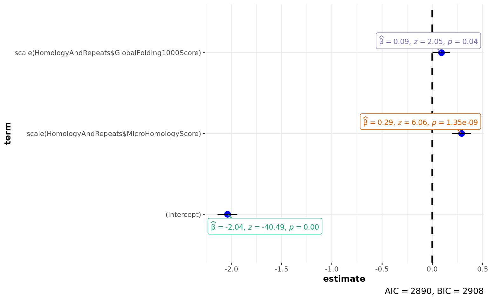
broom::tidy(a) %>%
kableExtra::kbl() %>%
kableExtra::kable_styling(
bootstrap_options = c(
"bordered", "condensed", "responsive", "striped"
)
)| term | estimate | std.error | statistic | p.value |
|---|---|---|---|---|
| (Intercept) | -2.0372126 | 0.0503135 | -40.490337 | 0.0000000 |
| scale(HomologyAndRepeats\(MicroHomologyScore) </td> <td style="text-align:right;"> 0.2912598 </td> <td style="text-align:right;"> 0.0480566 </td> <td style="text-align:right;"> 6.060761 </td> <td style="text-align:right;"> 0.0000000 </td> </tr> <tr> <td style="text-align:left;"> scale(HomologyAndRepeats\)GlobalFolding1000Score) | 0.0912813 | 0.0444382 | 2.054118 | 0.0399643 |
broom::glance(a) %>%
kableExtra::kbl() %>%
kableExtra::kable_styling(
bootstrap_options = c(
"bordered", "condensed", "responsive", "striped"
)
)| null.deviance | df.null | logLik | AIC | BIC | deviance | df.residual | nobs |
|---|---|---|---|---|---|---|---|
| 2924.693 | 4004 | -1441.768 | 2889.536 | 2908.422 | 2883.536 | 4002 | 4005 |
derive distance to the strongest contact: 6500 vs 14500 (see heatmap: global folding 1 kb resolution)
HomologyAndRepeats$DistanceToContact <- 0
for (i in seq_len(nrow(HomologyAndRepeats))) {
# i = 1
HomologyAndRepeats$DistanceToContact[i] <- raster::pointDistance(
c(
HomologyAndRepeats$FirstWindow[i],
HomologyAndRepeats$SecondWindow[i]
),
c(14550, 6550),
lonlat = FALSE
)
}
skim(HomologyAndRepeats$DistanceToContact) %>%
kableExtra::kbl() %>%
kableExtra::kable_styling(
bootstrap_options = c(
"bordered", "condensed", "responsive", "striped"
)
)| skim_type | skim_variable | n_missing | complete_rate | numeric.mean | numeric.sd | numeric.p0 | numeric.p25 | numeric.p50 | numeric.p75 | numeric.p100 | numeric.hist |
|---|---|---|---|---|---|---|---|---|---|---|---|
| numeric | data | 0 | 1 | 3726.984 | 1747.957 | 70.71068 | 2392.697 | 3842.525 | 4962.358 | 8245.302 | ▃▆▇▅▁ |
# the closest: -70; the most distant: -8245a <-
glm(
HomologyAndRepeats$Deletion ~ scale(HomologyAndRepeats$MicroHomologyScore) + scale(HomologyAndRepeats$DistanceToContact),
family = "binomial"
)
summary(a)
Call:
glm(formula = HomologyAndRepeats$Deletion ~ scale(HomologyAndRepeats$MicroHomologyScore) +
scale(HomologyAndRepeats$DistanceToContact), family = "binomial")
Deviance Residuals:
Min 1Q Median 3Q Max
-1.3824 -0.5088 -0.3101 -0.1852 3.0099
Coefficients:
Estimate Std. Error z value
(Intercept) -2.56654 0.07383 -34.760
scale(HomologyAndRepeats$MicroHomologyScore) 0.43224 0.05269 8.203
scale(HomologyAndRepeats$DistanceToContact) -1.24881 0.06520 -19.152
Pr(>|z|)
(Intercept) < 2e-16 ***
scale(HomologyAndRepeats$MicroHomologyScore) 2.34e-16 ***
scale(HomologyAndRepeats$DistanceToContact) < 2e-16 ***
---
Signif. codes: 0 '***' 0.001 '**' 0.01 '*' 0.05 '.' 0.1 ' ' 1
(Dispersion parameter for binomial family taken to be 1)
Null deviance: 2924.7 on 4004 degrees of freedom
Residual deviance: 2402.3 on 4002 degrees of freedom
AIC: 2408.3
Number of Fisher Scoring iterations: 6ggstatsplot::ggcoefstats(a)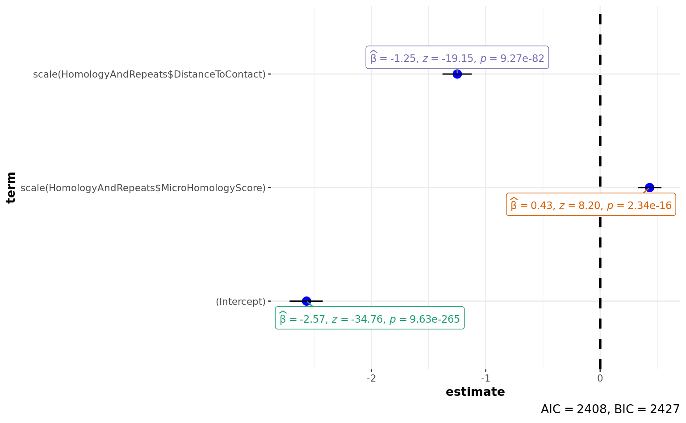
broom::tidy(a) %>%
kableExtra::kbl() %>%
kableExtra::kable_styling(
bootstrap_options = c(
"bordered", "condensed", "responsive", "striped"
)
)| term | estimate | std.error | statistic | p.value |
|---|---|---|---|---|
| (Intercept) | -2.566536 | 0.0738349 | -34.76046 | 0 |
| scale(HomologyAndRepeats\(MicroHomologyScore) </td> <td style="text-align:right;"> 0.432243 </td> <td style="text-align:right;"> 0.0526914 </td> <td style="text-align:right;"> 8.20330 </td> <td style="text-align:right;"> 0 </td> </tr> <tr> <td style="text-align:left;"> scale(HomologyAndRepeats\)DistanceToContact) | -1.248810 | 0.0652043 | -19.15226 | 0 |
broom::glance(a) %>%
kableExtra::kbl() %>%
kableExtra::kable_styling(
bootstrap_options = c(
"bordered", "condensed", "responsive", "striped"
)
)| null.deviance | df.null | logLik | AIC | BIC | deviance | df.residual | nobs |
|---|---|---|---|---|---|---|---|
| 2924.693 | 4004 | -1201.136 | 2408.272 | 2427.158 | 2402.272 | 4002 | 4005 |
derive distance to the common repeat:
HomologyAndRepeats$DistanceToContact <- 0
for (i in seq_len(nrow(HomologyAndRepeats))) {
# i = 1
HomologyAndRepeats$DistanceToContact[i] <- pointDistance(
c(
HomologyAndRepeats$FirstWindow[i],
HomologyAndRepeats$SecondWindow[i]
),
c(13447, 8469),
lonlat = FALSE
) # (8469-8482 - 13447-13459)
}
skim(HomologyAndRepeats$DistanceToContact) %>%
kableExtra::kbl() %>%
kableExtra::kable_styling(
bootstrap_options = c(
"bordered", "condensed", "responsive", "striped"
)
)| skim_type | skim_variable | n_missing | complete_rate | numeric.mean | numeric.sd | numeric.p0 | numeric.p25 | numeric.p50 | numeric.p75 | numeric.p100 | numeric.hist |
|---|---|---|---|---|---|---|---|---|---|---|---|
| numeric | data | 0 | 1 | 2744.767 | 1354.259 | 56.30275 | 1783.359 | 2535.62 | 3547.897 | 6939.998 | ▃▇▅▂▁ |
a <-
glm(
HomologyAndRepeats$Deletion ~ scale(HomologyAndRepeats$MicroHomologyScore) + scale(HomologyAndRepeats$DistanceToContact),
family = "binomial"
)
summary(a)
Call:
glm(formula = HomologyAndRepeats$Deletion ~ scale(HomologyAndRepeats$MicroHomologyScore) +
scale(HomologyAndRepeats$DistanceToContact), family = "binomial")
Deviance Residuals:
Min 1Q Median 3Q Max
-1.2894 -0.5524 -0.3985 -0.2235 2.8234
Coefficients:
Estimate Std. Error z value
(Intercept) -2.35793 0.06536 -36.077
scale(HomologyAndRepeats$MicroHomologyScore) 0.27667 0.05038 5.492
scale(HomologyAndRepeats$DistanceToContact) -1.00602 0.06878 -14.627
Pr(>|z|)
(Intercept) < 2e-16 ***
scale(HomologyAndRepeats$MicroHomologyScore) 3.98e-08 ***
scale(HomologyAndRepeats$DistanceToContact) < 2e-16 ***
---
Signif. codes: 0 '***' 0.001 '**' 0.01 '*' 0.05 '.' 0.1 ' ' 1
(Dispersion parameter for binomial family taken to be 1)
Null deviance: 2924.7 on 4004 degrees of freedom
Residual deviance: 2609.1 on 4002 degrees of freedom
AIC: 2615.1
Number of Fisher Scoring iterations: 6ggstatsplot::ggcoefstats(a) 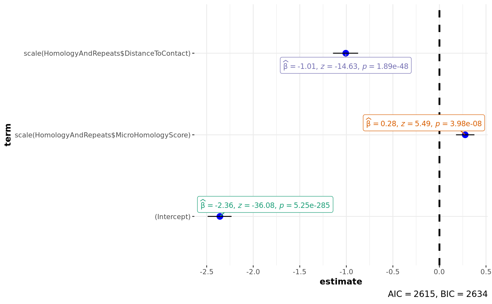
broom::tidy(a) %>%
kableExtra::kbl() %>%
kableExtra::kable_styling(
bootstrap_options = c(
"bordered", "condensed", "responsive", "striped"
)
)| term | estimate | std.error | statistic | p.value |
|---|---|---|---|---|
| (Intercept) | -2.3579307 | 0.0653587 | -36.076742 | 0 |
| scale(HomologyAndRepeats\(MicroHomologyScore) </td> <td style="text-align:right;"> 0.2766745 </td> <td style="text-align:right;"> 0.0503802 </td> <td style="text-align:right;"> 5.491729 </td> <td style="text-align:right;"> 0 </td> </tr> <tr> <td style="text-align:left;"> scale(HomologyAndRepeats\)DistanceToContact) | -1.0060227 | 0.0687794 | -14.626799 | 0 |
broom::glance(a) %>%
kableExtra::kbl() %>%
kableExtra::kable_styling(
bootstrap_options = c(
"bordered", "condensed", "responsive", "striped"
)
)| null.deviance | df.null | logLik | AIC | BIC | deviance | df.residual | nobs |
|---|---|---|---|---|---|---|---|
| 2924.693 | 4004 | -1304.572 | 2615.144 | 2634.03 | 2609.144 | 4002 | 4005 |
10: run many logistic regression in the loop and find the Contact Point/zone with the best AIC
mod_fun <- function(Coord1, Coord2) {
TempDF <-
HomologyAndRepeats %>%
dplyr::select(
FirstWindow,
SecondWindow,
Deletion,
MicroHomologyScore
) %>%
mutate(TempDistanceToContact = purrr::map2_dbl(
FirstWindow,
SecondWindow,
~ raster::pointDistance(c(.x, .y),
c(
Coord1,
Coord2
),
lonlat = F
)
))
a <-
glm(
TempDF$Deletion ~ scale(TempDF$MicroHomologyScore) + scale(TempDF$TempDistanceToContact),
family = "binomial"
)
return(a)
}
Results <- HomologyAndRepeats %>%
mutate(
LogRegr.ContactPoint.Coord1 = FirstWindow + 50,
LogRegr.ContactPoint.Coord2 = SecondWindow + 50
) %>%
mutate(model = furrr::future_map2(
LogRegr.ContactPoint.Coord1,
LogRegr.ContactPoint.Coord2,
mod_fun
))
ResultsTidy <- Results$model %>% purrr::map_dfr(~ broom::tidy(.x)[3, ])
ResultsGlance <- Results$model %>% purrr::map_dfr(broom::glance)
HomologyAndRepeats$LogRegr.ContactPoint.PiValue <- ResultsTidy$p.value
HomologyAndRepeats$LogRegr.ContactPoint.Coeff <- ResultsTidy$estimate
HomologyAndRepeats$LogRegr.ContactPoint.AIC <- ResultsGlance$AIC
HomologyAndRepeats$LogRegr.ContactPoint.ResidualDeviance <- ResultsGlance$deviance
HomologyAndRepeats$LogRegr.ContactPoint.Coord1 <- Results$LogRegr.ContactPoint.Coord1
HomologyAndRepeats$LogRegr.ContactPoint.Coord2 <- Results$LogRegr.ContactPoint.Coord2
rm(Results, ResultsGlance, ResultsTidy)
invisible(gc())
write.table(
HomologyAndRepeats,
here(plots_dir, "SlipAndJump.HomologyAndRepeats.txt") %>%
normalizePath(),
sep = "\t"
)HomologyAndRepeats <- read.table(
here(plots_dir, "SlipAndJump.HomologyAndRepeats.txt") %>%
normalizePath(),
sep = "\t"
)
HomologyAndRepeats <- HomologyAndRepeats[order(HomologyAndRepeats$LogRegr.ContactPoint.AIC), ]
names(HomologyAndRepeats) [1] "FirstWindowWholeKbRes"
[2] "SecondWindowWholeKbRes"
[3] "FirstWindow"
[4] "SecondWindow"
[5] "DirectRepeatsDensity"
[6] "MicroHomologyScore"
[7] "Deletion"
[8] "InfinitySign"
[9] "InvRepDensScore"
[10] "GlobalFoldingScore"
[11] "Residuals"
[12] "GlobalFolding1000Score"
[13] "DistanceToContact"
[14] "LogRegr.ContactPoint.PiValue"
[15] "LogRegr.ContactPoint.Coeff"
[16] "LogRegr.ContactPoint.AIC"
[17] "LogRegr.ContactPoint.ResidualDeviance"
[18] "LogRegr.ContactPoint.Coord1"
[19] "LogRegr.ContactPoint.Coord2" summary(HomologyAndRepeats$LogRegr.ContactPoint.ResidualDeviance) Min. 1st Qu. Median Mean 3rd Qu. Max.
2307 2692 2848 2756 2879 2888 summary(HomologyAndRepeats$LogRegr.ContactPoint.AIC) Min. 1st Qu. Median Mean 3rd Qu. Max.
2313 2698 2854 2762 2885 2894 HomologyAndRepeats %>% skim()| Name | Piped data |
| Number of rows | 4005 |
| Number of columns | 19 |
| _______________________ | |
| Column type frequency: | |
| numeric | 19 |
| ________________________ | |
| Group variables | None |
Variable type: numeric
| skim_variable | n_missing | complete_rate | mean | sd | p0 | p25 | p50 | p75 | p100 | hist |
|---|---|---|---|---|---|---|---|---|---|---|
| FirstWindowWholeKbRes | 0 | 1 | 12879.15 | 2148.55 | 7000.00 | 11000.00 | 13000.00 | 15000.00 | 16000.00 | ▁▃▆▇▆ |
| SecondWindowWholeKbRes | 0 | 1 | 8821.22 | 2144.50 | 6000.00 | 7000.00 | 8000.00 | 10000.00 | 15000.00 | ▇▇▆▃▁ |
| FirstWindow | 0 | 1 | 12866.67 | 2109.50 | 7000.00 | 11400.00 | 13200.00 | 14700.00 | 15800.00 | ▁▃▅▆▇ |
| SecondWindow | 0 | 1 | 8833.33 | 2109.50 | 5900.00 | 7000.00 | 8500.00 | 10300.00 | 14700.00 | ▇▆▅▃▁ |
| DirectRepeatsDensity | 0 | 1 | 5.77 | 7.79 | 0.00 | 0.00 | 0.00 | 10.00 | 57.00 | ▇▂▁▁▁ |
| MicroHomologyScore | 0 | 1 | 89.91 | 17.20 | 27.00 | 79.00 | 89.00 | 100.00 | 160.00 | ▁▅▇▂▁ |
| Deletion | 0 | 1 | 0.12 | 0.32 | 0.00 | 0.00 | 0.00 | 0.00 | 1.00 | ▇▁▁▁▁ |
| InfinitySign | 0 | 1 | 0.22 | 0.42 | 0.00 | 0.00 | 0.00 | 0.00 | 1.00 | ▇▁▁▁▂ |
| InvRepDensScore | 0 | 1 | 1.39 | 3.81 | 0.00 | 0.00 | 0.00 | 0.00 | 31.00 | ▇▁▁▁▁ |
| GlobalFoldingScore | 0 | 1 | 0.16 | 1.74 | 0.00 | 0.00 | 0.00 | 0.00 | 47.00 | ▇▁▁▁▁ |
| Residuals | 0 | 1 | -0.20 | 0.83 | -0.85 | -0.53 | -0.48 | -0.43 | 2.44 | ▇▁▁▁▁ |
| GlobalFolding1000Score | 0 | 1 | 15.41 | 37.87 | 0.00 | 0.00 | 0.00 | 0.00 | 173.00 | ▇▁▁▁▁ |
| DistanceToContact | 0 | 1 | 2744.77 | 1354.26 | 56.30 | 1783.36 | 2535.62 | 3547.90 | 6940.00 | ▃▇▅▂▁ |
| LogRegr.ContactPoint.PiValue | 0 | 1 | 0.07 | 0.18 | 0.00 | 0.00 | 0.00 | 0.00 | 1.00 | ▇▁▁▁▁ |
| LogRegr.ContactPoint.Coeff | 0 | 1 | -0.31 | 0.60 | -1.51 | -0.81 | -0.10 | 0.17 | 0.46 | ▃▂▂▅▇ |
| LogRegr.ContactPoint.AIC | 0 | 1 | 2762.23 | 179.48 | 2313.25 | 2697.87 | 2853.59 | 2885.22 | 2893.52 | ▁▁▁▁▇ |
| LogRegr.ContactPoint.ResidualDeviance | 0 | 1 | 2756.23 | 179.48 | 2307.25 | 2691.87 | 2847.59 | 2879.22 | 2887.52 | ▁▁▁▁▇ |
| LogRegr.ContactPoint.Coord1 | 0 | 1 | 12916.67 | 2109.50 | 7050.00 | 11450.00 | 13250.00 | 14750.00 | 15850.00 | ▁▃▅▆▇ |
| LogRegr.ContactPoint.Coord2 | 0 | 1 | 8883.33 | 2109.50 | 5950.00 | 7050.00 | 8550.00 | 10350.00 | 14750.00 | ▇▆▅▃▁ |
temp <- HomologyAndRepeats[
HomologyAndRepeats$LogRegr.ContactPoint.Coord1 == 11950 &
HomologyAndRepeats$LogRegr.ContactPoint.Coord2 == 8950,
]
tempHeatmap merged microhomology and AIC scores
tib <- HomologyAndRepeats %>%
dplyr::select(
LogRegr.ContactPoint.Coord1,
LogRegr.ContactPoint.Coord2,
MicroHomologyScore,
LogRegr.ContactPoint.AIC
) %>%
ggasym::asymmetrise(
.,
LogRegr.ContactPoint.Coord1,
LogRegr.ContactPoint.Coord2
)
pltHeatmap_mhAIC <- ggplot(
tib,
aes(
x = LogRegr.ContactPoint.Coord1,
y = LogRegr.ContactPoint.Coord2
)
) +
geom_asymmat(aes(
fill_br = LogRegr.ContactPoint.AIC,
fill_tl = MicroHomologyScore
)) +
scale_fill_br_distiller(
type = "seq",
palette = "Spectral",
direction = 1,
na.value = "white",
guide = guide_colourbar(
direction = "horizontal",
order = 1,
title.position = "top"
)
) +
scale_fill_tl_distiller(
type = "seq",
palette = "RdYlGn",
direction = 1,
na.value = "white",
guide = guide_colourbar(
direction = "horizontal",
order = 2,
title.position = "top"
)
) +
labs(
fill_br = "top-right Contact AIC",
fill_tl = "bottom-left Microhomology",
title = "Model of mtDNA contacts"
) +
theme_bw() +
theme(
axis.title = element_blank(),
plot.title = element_text(hjust = 0.5),
panel.background = element_rect(fill = "white"),
panel.grid = element_blank()
)
cowplot::save_plot(
plot = pltHeatmap_mhAIC,
base_height = 8.316,
base_width = 11.594,
file = normalizePath(
file.path(plots_dir, "heatmap_microhomology_AIC.pdf")
)
)
pltHeatmap_mhAIC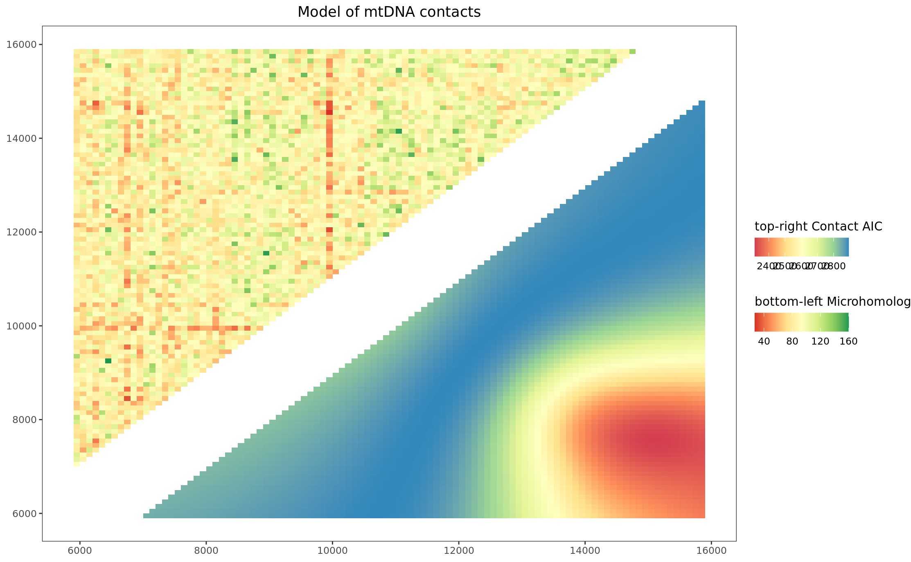
Article version Figure 2C: Heatmap merged microhomology and AIC scores with actual deletions circles
tib <- HomologyAndRepeats %>%
dplyr::select(
LogRegr.ContactPoint.Coord1,
LogRegr.ContactPoint.Coord2,
MicroHomologyScore,
LogRegr.ContactPoint.AIC,
Deletion
) %>%
asymmetrise(
.,
LogRegr.ContactPoint.Coord1,
LogRegr.ContactPoint.Coord2
)
pltHeatmap_mhAIC_wt_deletions <- ggplot(
tib,
aes(
x = LogRegr.ContactPoint.Coord1,
y = LogRegr.ContactPoint.Coord2
)
) +
geom_asymmat(aes(
fill_br = LogRegr.ContactPoint.AIC,
fill_tl = MicroHomologyScore
)) +
geom_point(
data = subset(tib, Deletion > 0),
aes(alpha = 0.3),
shape = 1,
size = 2.3,
color = "#d73027", # "#041c00",
show.legend = FALSE,
na.rm = TRUE
) +
scale_fill_br_gradientn(
colours = viridis::viridis(2000)[250:2000],
na.value = "white",
guide = guide_colourbar(
direction = "horizontal",
order = 1,
title.position = "top",
barwidth = 10, barheight = 1
)
) +
scale_fill_tl_distiller(
type = "div",
palette = "RdYlBu",
direction = 1,
na.value = "white",
guide = guide_colourbar(
direction = "horizontal",
order = 2,
title.position = "top",
barwidth = 10, barheight = 1
)
) +
labs(
fill_br = "top-right Contact AIC",
fill_tl = "bottom-left Microhomology",
title = "Model of mtDNA contacts and deletions"
) +
theme_bw() +
theme(
axis.title = element_blank(),
plot.title = element_text(hjust = 0.5),
panel.background = element_rect(fill = "white"),
panel.grid = element_blank(),
legend.position = "bottom",
legend.box = "horizontal"
)
cowplot::save_plot(
plot = pltHeatmap_mhAIC_wt_deletions,
base_height = 8.316,
base_asp = 0.9,
file = normalizePath(
file.path(plots_dir, "heatmap_microhomology_AIC_wt_deledions.svg")
)
)
pltHeatmap_mhAIC_wt_deletions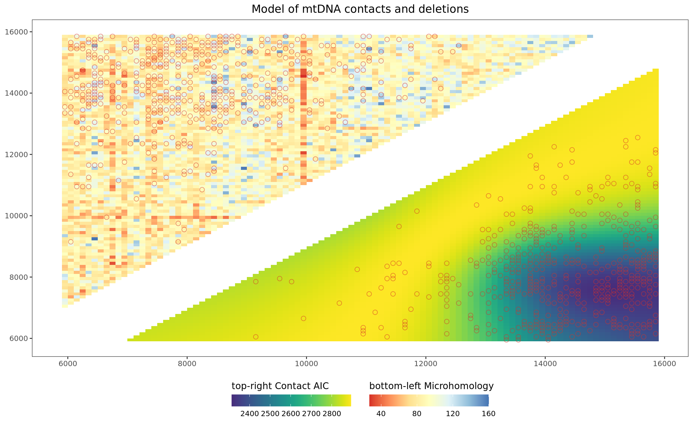
Figures 2C-D:
pltHeatmap_mhAIC_wt_deletions | gg_bind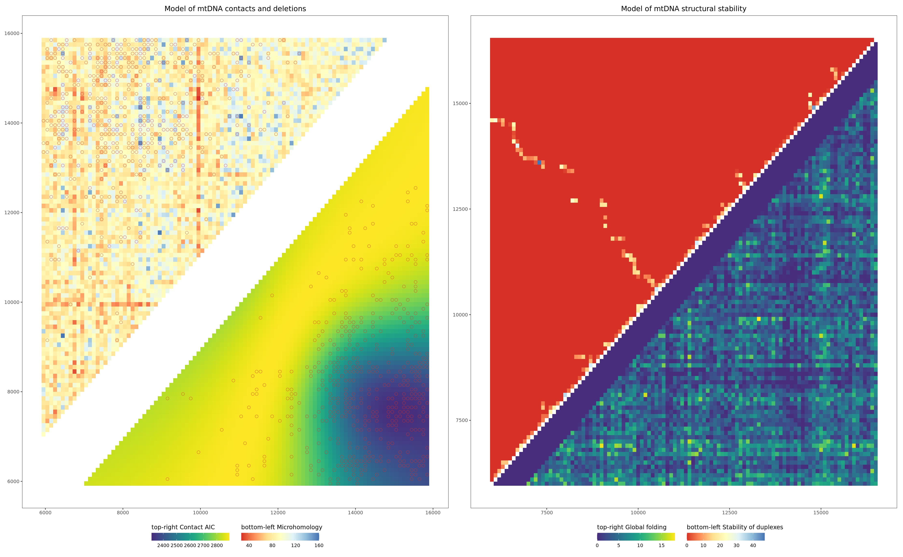
sessionInfo()R version 4.2.2 (2022-10-31)
Platform: x86_64-pc-linux-gnu (64-bit)
Running under: Ubuntu 22.04.1 LTS
Matrix products: default
BLAS: /usr/lib/x86_64-linux-gnu/openblas-pthread/libblas.so.3
LAPACK: /usr/lib/x86_64-linux-gnu/openblas-pthread/libopenblasp-r0.3.20.so
locale:
[1] LC_CTYPE=en_US.UTF-8 LC_NUMERIC=C
[3] LC_TIME=en_US.UTF-8 LC_COLLATE=en_US.UTF-8
[5] LC_MONETARY=en_US.UTF-8 LC_MESSAGES=en_US.UTF-8
[7] LC_PAPER=en_US.UTF-8 LC_NAME=C
[9] LC_ADDRESS=C LC_TELEPHONE=C
[11] LC_MEASUREMENT=en_US.UTF-8 LC_IDENTIFICATION=C
attached base packages:
[1] stats graphics grDevices datasets utils methods base
other attached packages:
[1] ggasym_0.1.6 ggstatsplot_0.11.0 pspearman_0.3-1 skimr_2.1.5
[5] raster_3.6-20 sp_1.6-0 patchwork_1.1.2 cowplot_1.1.1
[9] furrr_0.3.1 future_1.32.0 here_1.0.1 lubridate_1.9.2
[13] forcats_1.0.0 stringr_1.5.0 dplyr_1.1.1 purrr_1.0.1
[17] readr_2.1.4 tidyr_1.3.0 tibble_3.2.1 ggplot2_3.4.2
[21] tidyverse_2.0.0 reshape2_1.4.4 workflowr_1.7.0
loaded via a namespace (and not attached):
[1] colorspace_2.1-0 sjlabelled_1.2.0 rprojroot_2.0.3
[4] snakecase_0.11.0 parameters_0.20.2 base64enc_0.1-3
[7] fs_1.6.1 rstudioapi_0.14 listenv_0.9.0
[10] farver_2.1.1 MatrixModels_0.5-1 ggrepel_0.9.3
[13] mvtnorm_1.1-3 fansi_1.0.4 xml2_1.3.3
[16] codetools_0.2-19 cachem_1.0.7 knitr_1.42
[19] sjmisc_2.8.9 zeallot_0.1.0 jsonlite_1.8.4
[22] broom_1.0.4 effectsize_0.8.3 compiler_4.2.2
[25] httr_1.4.5 backports_1.4.1 Matrix_1.5-3
[28] fastmap_1.1.1 cli_3.6.1 later_1.3.0
[31] htmltools_0.5.5 tools_4.2.2 coda_0.19-4
[34] gtable_0.3.3 glue_1.6.2 ggthemes_4.2.4
[37] Rcpp_1.0.10 jquerylib_0.1.4 vctrs_0.6.1
[40] svglite_2.1.1 insight_0.19.1 xfun_0.38
[43] globals_0.16.2 ps_1.7.4 rvest_1.0.3
[46] timechange_0.2.0 lifecycle_1.0.3 renv_0.17.2
[49] terra_1.7-18 getPass_0.2-2 MASS_7.3-58.1
[52] scales_1.2.1 BayesFactor_0.9.12-4.4 ragg_1.2.5
[55] hms_1.1.3 promises_1.2.0.1 parallel_4.2.2
[58] rematch2_2.1.2 RColorBrewer_1.1-3 prismatic_1.1.1
[61] yaml_2.3.7 pbapply_1.7-0 gridExtra_2.3
[64] sass_0.4.5 stringi_1.7.12 paletteer_1.5.0
[67] highr_0.10 bayestestR_0.13.0 repr_1.1.6
[70] rlang_1.1.0 pkgconfig_2.0.3 systemfonts_1.0.4
[73] evaluate_0.20 lattice_0.20-45 labeling_0.4.2
[76] processx_3.8.0 tidyselect_1.2.0 parallelly_1.35.0
[79] plyr_1.8.8 magrittr_2.0.3 R6_2.5.1
[82] generics_0.1.3 pillar_1.9.0 whisker_0.4.1
[85] withr_2.5.0 datawizard_0.7.1 performance_0.10.2
[88] janitor_2.2.0 utf8_1.2.3 correlation_0.8.3
[91] tzdb_0.3.0 rmarkdown_2.21 viridis_0.6.2
[94] grid_4.2.2 callr_3.7.3 git2r_0.31.0
[97] webshot_0.5.4 digest_0.6.31 httpuv_1.6.9
[100] textshaping_0.3.6 statsExpressions_1.5.0 munsell_0.5.0
[103] kableExtra_1.3.4 viridisLite_0.4.1 bslib_0.4.2